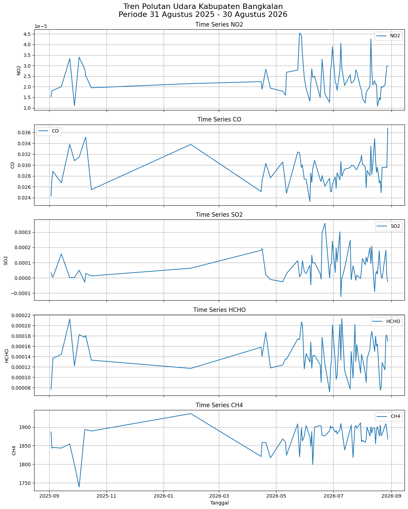

Kualitas Udara diKabupaten Bangkalan#
###1. Business Understanding
Tujuan proyek#
Proyek ini bertujuan untuk mengamati kondisi dan perubahan konsentrasi beberapa polutan udara di Kabupaten Bangkalan selama satu tahun, yaitu dari 31 Agustus 2025 sampai 30 Agustus 2026, dengan memanfaatkan data citra satelit Sentinel-5P melalui platform openEO Copernicus Data Space.
Polutan yang diamati adalah:#
NO₂ (Nitrogen Dioxide)
CO (Carbon Monoxide)
SO₂ (Sulfur Dioxide)
HCHO (Formaldehyde)
CH₄ (Methane)
Data dihitung secara harian, kemudian digunakan untuk melihat perubahan nilai polutan dari waktu ke waktu melalui analisis time series.
Permasalahan#
Kualitas udara dapat berubah dari hari ke hari akibat berbagai aktivitas dan kondisi lingkungan. Oleh karena itu, diperlukan pemantauan yang dapat menunjukkan bagaimana konsentrasi polutan berubah selama periode tertentu.
Tujuan analisis#
Analisis dilakukan untuk:
Mengambil data polutan di wilayah Kabupaten Bangkalan.
Mengamati perubahan nilai setiap polutan secara harian.
Mengetahui nilai minimum, rata-rata, dan maksimum setiap polutan.
Mengetahui tanggal ketika nilai polutan mencapai nilai tertinggi dan terendah.
Mengidentifikasi pola perubahan polutan selama satu tahun.
Menyajikan hasil dalam bentuk grafik time series.
Menyimpan hasil pengolahan dalam format CSV
Manfaat#
Hasil proyek dapat digunakan sebagai informasi awal untuk mengamati pola kualitas udara di Kabupaten Bangkalan dengan bantuan data satelit. Data tersebut dapat membantu melihat periode ketika suatu parameter polutan mengalami peningkatan atau penurunan.
2. Data Understanding#
Sumber data#
Data diperoleh menggunakan Sentinel-5P Level-2 melalui Copernicus Data Space Ecosystem dengan openEO. Wilayah penelitian adalah Kabupaten Bangkalan, Jawa Timur.
Periode:#
31 Agustus 2025 – 30 Agustus 2026
Data yang digunakan terdiri dari lima parameter:
Parameter |
Nama |
Keterangan umum |
|---|---|---|
NO₂ |
Nitrogen Dioxide |
Gas yang berkaitan dengan pembakaran dan aktivitas transportasi/industri |
CO |
Carbon Monoxide |
Gas hasil pembakaran tidak sempurna |
SO₂ |
Sulfur Dioxide |
Gas yang berkaitan dengan pembakaran bahan bakar yang mengandung sulfur |
HCHO |
Formaldehyde |
Senyawa yang dapat berkaitan dengan proses kimia atmosfer dan berbagai sumber emisi |
CH₄ |
Methane |
Gas rumah kaca yang dapat berasal dari berbagai sumber alami maupun aktivitas manusia |
Kenapa HCHO tetap digunakan? HCHO bukan “polutan utama” seperti NO₂ atau CO dalam semua konteks kualitas udara, tetapi merupakan parameter atmosfer yang dapat dipantau oleh Sentinel-5P dan relevan untuk studi komposisi atmosfer.
pip install openeo
Collecting openeo
Downloading openeo-0.51.0-py3-none-any.whl.metadata (8.9 kB)
Requirement already satisfied: requests>=2.26.0 in /home/codespace/.local/lib/python3.12/site-packages (from openeo) (2.32.5)
Requirement already satisfied: urllib3>=1.9.0 in /home/codespace/.local/lib/python3.12/site-packages (from openeo) (2.6.3)
Collecting shapely>=1.6.4 (from openeo)
Downloading shapely-2.1.2-cp312-cp312-manylinux2014_x86_64.manylinux_2_17_x86_64.whl.metadata (6.8 kB)
Collecting numpy>=1.17.0 (from openeo)
Downloading numpy-2.5.2-cp312-cp312-manylinux_2_27_x86_64.manylinux_2_28_x86_64.whl.metadata (6.6 kB)
Collecting xarray<2025.01.2,>=0.12.3 (from openeo)
Downloading xarray-2025.1.1-py3-none-any.whl.metadata (11 kB)
Collecting pandas<3.0.0,>0.20.0 (from openeo)
Downloading pandas-2.3.3-cp312-cp312-manylinux_2_24_x86_64.manylinux_2_28_x86_64.whl.metadata (91 kB)
Collecting pystac>=1.5.0 (from openeo)
Downloading pystac-1.15.2-py3-none-any.whl.metadata (6.3 kB)
Collecting deprecated>=1.2.12 (from openeo)
Downloading deprecated-1.3.1-py2.py3-none-any.whl.metadata (5.9 kB)
Collecting geopandas>=0.14 (from openeo)
Downloading geopandas-1.1.4-py3-none-any.whl.metadata (2.3 kB)
Requirement already satisfied: python-dateutil>=2.8.2 in /home/codespace/.local/lib/python3.12/site-packages (from pandas<3.0.0,>0.20.0->openeo) (2.9.0.post0)
Collecting pytz>=2020.1 (from pandas<3.0.0,>0.20.0->openeo)
Downloading pytz-2026.3.post1-py2.py3-none-any.whl.metadata (22 kB)
Requirement already satisfied: tzdata>=2022.7 in /home/codespace/.local/lib/python3.12/site-packages (from pandas<3.0.0,>0.20.0->openeo) (2025.3)
Requirement already satisfied: packaging>=23.2 in /home/codespace/.local/lib/python3.12/site-packages (from xarray<2025.01.2,>=0.12.3->openeo) (26.0)
Collecting wrapt<3,>=1.10 (from deprecated>=1.2.12->openeo)
Downloading wrapt-2.4.0-cp312-cp312-manylinux1_x86_64.manylinux_2_28_x86_64.manylinux_2_5_x86_64.whl.metadata (7.4 kB)
Collecting pyogrio>=0.7.2 (from geopandas>=0.14->openeo)
Downloading pyogrio-0.13.0-cp311-abi3-manylinux_2_28_x86_64.whl.metadata (5.8 kB)
Collecting pyproj>=3.5.0 (from geopandas>=0.14->openeo)
Downloading pyproj-3.7.2-cp312-cp312-manylinux_2_28_x86_64.whl.metadata (31 kB)
Requirement already satisfied: certifi in /home/codespace/.local/lib/python3.12/site-packages (from pyogrio>=0.7.2->geopandas>=0.14->openeo) (2026.2.25)
Collecting pystac-core<2,>=1.15.0 (from pystac>=1.5.0->openeo)
Downloading pystac_core-1.15.2-py3-none-any.whl.metadata (1.3 kB)
Collecting pystac-ext-classification (from pystac>=1.5.0->openeo)
Downloading pystac_ext_classification-2.0.1-py3-none-any.whl.metadata (2.1 kB)
Collecting pystac-ext-datacube (from pystac>=1.5.0->openeo)
Downloading pystac_ext_datacube-2.2.1-py3-none-any.whl.metadata (1.8 kB)
Collecting pystac-ext-eo (from pystac>=1.5.0->openeo)
Downloading pystac_ext_eo-1.1.1-py3-none-any.whl.metadata (1.9 kB)
Collecting pystac-ext-file (from pystac>=1.5.0->openeo)
Downloading pystac_ext_file-2.1.1-py3-none-any.whl.metadata (1.8 kB)
Collecting pystac-ext-grid (from pystac>=1.5.0->openeo)
Downloading pystac_ext_grid-1.1.1-py3-none-any.whl.metadata (1.9 kB)
Collecting pystac-ext-item-assets (from pystac>=1.5.0->openeo)
Downloading pystac_ext_item_assets-1.0.1-py3-none-any.whl.metadata (1.9 kB)
Collecting pystac-ext-label (from pystac>=1.5.0->openeo)
Downloading pystac_ext_label-1.0.2-py3-none-any.whl.metadata (1.9 kB)
Collecting pystac-ext-mgrs (from pystac>=1.5.0->openeo)
Downloading pystac_ext_mgrs-1.0.1-py3-none-any.whl.metadata (1.8 kB)
Collecting pystac-ext-mlm (from pystac>=1.5.0->openeo)
Downloading pystac_ext_mlm-1.4.1-py3-none-any.whl.metadata (2.2 kB)
Collecting pystac-ext-pointcloud (from pystac>=1.5.0->openeo)
Downloading pystac_ext_pointcloud-1.0.1-py3-none-any.whl.metadata (1.8 kB)
Collecting pystac-ext-projection (from pystac>=1.5.0->openeo)
Downloading pystac_ext_projection-2.0.1-py3-none-any.whl.metadata (2.1 kB)
Collecting pystac-ext-raster (from pystac>=1.5.0->openeo)
Downloading pystac_ext_raster-1.1.1-py3-none-any.whl.metadata (1.9 kB)
Collecting pystac-ext-render (from pystac>=1.5.0->openeo)
Downloading pystac_ext_render-2.0.0-py3-none-any.whl.metadata (1.8 kB)
Collecting pystac-ext-sar (from pystac>=1.5.0->openeo)
Downloading pystac_ext_sar-1.0.1-py3-none-any.whl.metadata (1.8 kB)
Collecting pystac-ext-sat (from pystac>=1.5.0->openeo)
Downloading pystac_ext_sat-1.0.1-py3-none-any.whl.metadata (1.8 kB)
Collecting pystac-ext-scientific (from pystac>=1.5.0->openeo)
Downloading pystac_ext_scientific-1.0.1-py3-none-any.whl.metadata (1.8 kB)
Collecting pystac-ext-storage (from pystac>=1.5.0->openeo)
Downloading pystac_ext_storage-2.0.1-py3-none-any.whl.metadata (1.9 kB)
Collecting pystac-ext-table (from pystac>=1.5.0->openeo)
Downloading pystac_ext_table-1.2.1-py3-none-any.whl.metadata (1.8 kB)
Collecting pystac-ext-timestamps (from pystac>=1.5.0->openeo)
Downloading pystac_ext_timestamps-1.1.1-py3-none-any.whl.metadata (1.8 kB)
Collecting pystac-ext-version (from pystac>=1.5.0->openeo)
Downloading pystac_ext_version-1.2.1-py3-none-any.whl.metadata (1.9 kB)
Collecting pystac-ext-view (from pystac>=1.5.0->openeo)
Downloading pystac_ext_view-1.0.1-py3-none-any.whl.metadata (1.8 kB)
Collecting pystac-ext-xarray-assets (from pystac>=1.5.0->openeo)
Downloading pystac_ext_xarray_assets-1.0.1-py3-none-any.whl.metadata (1.9 kB)
Requirement already satisfied: six>=1.5 in /home/codespace/.local/lib/python3.12/site-packages (from python-dateutil>=2.8.2->pandas<3.0.0,>0.20.0->openeo) (1.17.0)
Requirement already satisfied: charset_normalizer<4,>=2 in /home/codespace/.local/lib/python3.12/site-packages (from requests>=2.26.0->openeo) (3.4.5)
Requirement already satisfied: idna<4,>=2.5 in /home/codespace/.local/lib/python3.12/site-packages (from requests>=2.26.0->openeo) (3.11)
Downloading openeo-0.51.0-py3-none-any.whl (349 kB)
Downloading pandas-2.3.3-cp312-cp312-manylinux_2_24_x86_64.manylinux_2_28_x86_64.whl (12.4 MB)
?25l ━━━━━━━━━━━━━━━━━━━━━━━━━━━━━━━━━━━━━━━━ 0.0/12.4 MB ? eta -:--:--
━━━━━━━━━━━━━━━━━━━━━━━━━━━━━━━━━━━━━━━╸ 12.3/12.4 MB 353.4 MB/s eta 0:00:01
━━━━━━━━━━━━━━━━━━━━━━━━━━━━━━━━━━━━━━━━ 12.4/12.4 MB 37.1 MB/s 0:00:00
?25hDownloading xarray-2025.1.1-py3-none-any.whl (1.2 MB)
?25l
━━━━━━━━━━━━━━━━━━━━━━━━━━━━━━━━━━━━━━━━ 0.0/1.2 MB ? eta -:--:--
━━━━━━━━━━━━━━━━━━━━━━━━━━━━━━━━━━━━━━━━ 1.2/1.2 MB 26.0 MB/s 0:00:00
?25hDownloading deprecated-1.3.1-py2.py3-none-any.whl (11 kB)
Downloading wrapt-2.4.0-cp312-cp312-manylinux1_x86_64.manylinux_2_28_x86_64.manylinux_2_5_x86_64.whl (227 kB)
Downloading geopandas-1.1.4-py3-none-any.whl (343 kB)
Downloading numpy-2.5.2-cp312-cp312-manylinux_2_27_x86_64.manylinux_2_28_x86_64.whl (16.7 MB)
?25l ━━━━━━━━━━━━━━━━━━━━━━━━━━━━━━━━━━━━━━━━ 0.0/16.7 MB ? eta -:--:--
━━━━━━━━━━━━━━━━━━━━━━━━━━━━━━━━━━━━━━━╸ 16.5/16.7 MB 353.3 MB/s eta 0:00:01
━━━━━━━━━━━━━━━━━━━━━━━━━━━━━━━━━━━━━━━╸ 16.5/16.7 MB 353.3 MB/s eta 0:00:01
━━━━━━━━━━━━━━━━━━━━━━━━━━━━━━━━━━━━━━━━ 16.7/16.7 MB 37.7 MB/s 0:00:00
?25hDownloading pyogrio-0.13.0-cp311-abi3-manylinux_2_28_x86_64.whl (33.3 MB)
?25l ━━━━━━━━━━━━━━━━━━━━━━━━━━━━━━━━━━━━━━━━ 0.0/33.3 MB ? eta -:--:--
━━━━━━━━━━━━━━━━━━━━━━━━━━━━━━━━━━━━━━━╸ 33.3/33.3 MB 237.1 MB/s eta 0:00:01
━━━━━━━━━━━━━━━━━━━━━━━━━━━━━━━━━━━━━━━╸ 33.3/33.3 MB 237.1 MB/s eta 0:00:01
━━━━━━━━━━━━━━━━━━━━━━━━━━━━━━━━━━━━━━━╸ 33.3/33.3 MB 237.1 MB/s eta 0:00:01
━━━━━━━━━━━━━━━━━━━━━━━━━━━━━━━━━━━━━━━╸ 33.3/33.3 MB 237.1 MB/s eta 0:00:01
━━━━━━━━━━━━━━━━━━━━━━━━━━━━━━━━━━━━━━━╸ 33.3/33.3 MB 237.1 MB/s eta 0:00:01
━━━━━━━━━━━━━━━━━━━━━━━━━━━━━━━━━━━━━━━━ 33.3/33.3 MB 32.3 MB/s 0:00:01
?25hDownloading pyproj-3.7.2-cp312-cp312-manylinux_2_28_x86_64.whl (9.6 MB)
?25l ━━━━━━━━━━━━━━━━━━━━━━━━━━━━━━━━━━━━━━━━ 0.0/9.6 MB ? eta -:--:--
━━━━━━━━━━━━━━━━━━━━━━━━━━━━━━━━━━━━━━━╸ 9.4/9.6 MB 173.6 MB/s eta 0:00:01
━━━━━━━━━━━━━━━━━━━━━━━━━━━━━━━━━━━━━━━━ 9.6/9.6 MB 31.9 MB/s 0:00:00
?25hDownloading pystac-1.15.2-py3-none-any.whl (5.7 kB)
Downloading pystac_core-1.15.2-py3-none-any.whl (117 kB)
Downloading pytz-2026.3.post1-py2.py3-none-any.whl (508 kB)
Downloading shapely-2.1.2-cp312-cp312-manylinux2014_x86_64.manylinux_2_17_x86_64.whl (3.1 MB)
?25l ━━━━━━━━━━━━━━━━━━━━━━━━━━━━━━━━━━━━━━━━ 0.0/3.1 MB ? eta -:--:--
━━━━━━━━━━━━━━━━━━━━━━━━━━━━━━━━━━━━━━━━ 3.1/3.1 MB 31.2 MB/s 0:00:00
?25hDownloading pystac_ext_classification-2.0.1-py3-none-any.whl (7.4 kB)
Downloading pystac_ext_datacube-2.2.1-py3-none-any.whl (7.1 kB)
Downloading pystac_ext_eo-1.1.1-py3-none-any.whl (7.7 kB)
Downloading pystac_ext_file-2.1.1-py3-none-any.whl (5.8 kB)
Downloading pystac_ext_grid-1.1.1-py3-none-any.whl (3.6 kB)
Downloading pystac_ext_item_assets-1.0.1-py3-none-any.whl (3.7 kB)
Downloading pystac_ext_label-1.0.2-py3-none-any.whl (8.2 kB)
Downloading pystac_ext_mgrs-1.0.1-py3-none-any.whl (4.1 kB)
Downloading pystac_ext_mlm-1.4.1-py3-none-any.whl (13 kB)
Downloading pystac_ext_pointcloud-1.0.1-py3-none-any.whl (6.5 kB)
Downloading pystac_ext_projection-2.0.1-py3-none-any.whl (7.4 kB)
Downloading pystac_ext_raster-1.1.1-py3-none-any.whl (6.8 kB)
Downloading pystac_ext_render-2.0.0-py3-none-any.whl (5.0 kB)
Downloading pystac_ext_sar-1.0.1-py3-none-any.whl (6.5 kB)
Downloading pystac_ext_sat-1.0.1-py3-none-any.whl (4.9 kB)
Downloading pystac_ext_scientific-1.0.1-py3-none-any.whl (5.5 kB)
Downloading pystac_ext_storage-2.0.1-py3-none-any.whl (7.6 kB)
Downloading pystac_ext_table-1.2.1-py3-none-any.whl (4.7 kB)
Downloading pystac_ext_timestamps-1.1.1-py3-none-any.whl (4.6 kB)
Downloading pystac_ext_version-1.2.1-py3-none-any.whl (5.8 kB)
Downloading pystac_ext_view-1.0.1-py3-none-any.whl (4.8 kB)
Downloading pystac_ext_xarray_assets-1.0.1-py3-none-any.whl (3.9 kB)
Installing collected packages: pytz, wrapt, pyproj, numpy, shapely, pystac-core, pyogrio, pandas, deprecated, xarray, pystac-ext-xarray-assets, pystac-ext-view, pystac-ext-version, pystac-ext-timestamps, pystac-ext-table, pystac-ext-storage, pystac-ext-scientific, pystac-ext-sat, pystac-ext-sar, pystac-ext-render, pystac-ext-raster, pystac-ext-projection, pystac-ext-pointcloud, pystac-ext-mgrs, pystac-ext-label, pystac-ext-item-assets, pystac-ext-grid, pystac-ext-file, pystac-ext-datacube, geopandas, pystac-ext-eo, pystac-ext-classification, pystac-ext-mlm, pystac, openeo
?25l
━━━━━━━━━━━━━━━━━━━━━━━━━━━━━━━━━━━━━━━━ 0/35 [pytz]
━━╺━━━━━━━━━━━━━━━━━━━━━━━━━━━━━━━━━━━━━ 2/35 [pyproj]
━━━╺━━━━━━━━━━━━━━━━━━━━━━━━━━━━━━━━━━━━ 3/35 [numpy]
━━━╺━━━━━━━━━━━━━━━━━━━━━━━━━━━━━━━━━━━━ 3/35 [numpy]
━━━╺━━━━━━━━━━━━━━━━━━━━━━━━━━━━━━━━━━━━ 3/35 [numpy]
━━━╺━━━━━━━━━━━━━━━━━━━━━━━━━━━━━━━━━━━━ 3/35 [numpy]
━━━╺━━━━━━━━━━━━━━━━━━━━━━━━━━━━━━━━━━━━ 3/35 [numpy]
━━━╺━━━━━━━━━━━━━━━━━━━━━━━━━━━━━━━━━━━━ 3/35 [numpy]
━━━╺━━━━━━━━━━━━━━━━━━━━━━━━━━━━━━━━━━━━ 3/35 [numpy]
━━━╺━━━━━━━━━━━━━━━━━━━━━━━━━━━━━━━━━━━━ 3/35 [numpy]
━━━╺━━━━━━━━━━━━━━━━━━━━━━━━━━━━━━━━━━━━ 3/35 [numpy]
━━━╺━━━━━━━━━━━━━━━━━━━━━━━━━━━━━━━━━━━━ 3/35 [numpy]
━━━╺━━━━━━━━━━━━━━━━━━━━━━━━━━━━━━━━━━━━ 3/35 [numpy]
━━━╺━━━━━━━━━━━━━━━━━━━━━━━━━━━━━━━━━━━━ 3/35 [numpy]
━━━╺━━━━━━━━━━━━━━━━━━━━━━━━━━━━━━━━━━━━ 3/35 [numpy]
━━━╺━━━━━━━━━━━━━━━━━━━━━━━━━━━━━━━━━━━━ 3/35 [numpy]
━━━╺━━━━━━━━━━━━━━━━━━━━━━━━━━━━━━━━━━━━ 3/35 [numpy]
━━━━╸━━━━━━━━━━━━━━━━━━━━━━━━━━━━━━━━━━━ 4/35 [shapely]
━━━━╸━━━━━━━━━━━━━━━━━━━━━━━━━━━━━━━━━━━ 4/35 [shapely]
━━━━━━╸━━━━━━━━━━━━━━━━━━━━━━━━━━━━━━━━━ 6/35 [pyogrio]
━━━━━━╸━━━━━━━━━━━━━━━━━━━━━━━━━━━━━━━━━ 6/35 [pyogrio]
━━━━━━╸━━━━━━━━━━━━━━━━━━━━━━━━━━━━━━━━━ 6/35 [pyogrio]
━━━━━━━━╺━━━━━━━━━━━━━━━━━━━━━━━━━━━━━━━ 7/35 [pandas]
━━━━━━━━╺━━━━━━━━━━━━━━━━━━━━━━━━━━━━━━━ 7/35 [pandas]
━━━━━━━━╺━━━━━━━━━━━━━━━━━━━━━━━━━━━━━━━ 7/35 [pandas]
━━━━━━━━╺━━━━━━━━━━━━━━━━━━━━━━━━━━━━━━━ 7/35 [pandas]
━━━━━━━━╺━━━━━━━━━━━━━━━━━━━━━━━━━━━━━━━ 7/35 [pandas]
━━━━━━━━╺━━━━━━━━━━━━━━━━━━━━━━━━━━━━━━━ 7/35 [pandas]
━━━━━━━━╺━━━━━━━━━━━━━━━━━━━━━━━━━━━━━━━ 7/35 [pandas]
━━━━━━━━╺━━━━━━━━━━━━━━━━━━━━━━━━━━━━━━━ 7/35 [pandas]
━━━━━━━━╺━━━━━━━━━━━━━━━━━━━━━━━━━━━━━━━ 7/35 [pandas]
━━━━━━━━╺━━━━━━━━━━━━━━━━━━━━━━━━━━━━━━━ 7/35 [pandas]
━━━━━━━━╺━━━━━━━━━━━━━━━━━━━━━━━━━━━━━━━ 7/35 [pandas]
━━━━━━━━╺━━━━━━━━━━━━━━━━━━━━━━━━━━━━━━━ 7/35 [pandas]
━━━━━━━━╺━━━━━━━━━━━━━━━━━━━━━━━━━━━━━━━ 7/35 [pandas]
━━━━━━━━╺━━━━━━━━━━━━━━━━━━━━━━━━━━━━━━━ 7/35 [pandas]
━━━━━━━━╺━━━━━━━━━━━━━━━━━━━━━━━━━━━━━━━ 7/35 [pandas]
━━━━━━━━╺━━━━━━━━━━━━━━━━━━━━━━━━━━━━━━━ 7/35 [pandas]
━━━━━━━━╺━━━━━━━━━━━━━━━━━━━━━━━━━━━━━━━ 7/35 [pandas]
━━━━━━━━╺━━━━━━━━━━━━━━━━━━━━━━━━━━━━━━━ 7/35 [pandas]
━━━━━━━━╺━━━━━━━━━━━━━━━━━━━━━━━━━━━━━━━ 7/35 [pandas]
━━━━━━━━╺━━━━━━━━━━━━━━━━━━━━━━━━━━━━━━━ 7/35 [pandas]
━━━━━━━━╺━━━━━━━━━━━━━━━━━━━━━━━━━━━━━━━ 7/35 [pandas]
━━━━━━━━╺━━━━━━━━━━━━━━━━━━━━━━━━━━━━━━━ 7/35 [pandas]
━━━━━━━━╺━━━━━━━━━━━━━━━━━━━━━━━━━━━━━━━ 7/35 [pandas]
━━━━━━━━╺━━━━━━━━━━━━━━━━━━━━━━━━━━━━━━━ 7/35 [pandas]
━━━━━━━━╺━━━━━━━━━━━━━━━━━━━━━━━━━━━━━━━ 7/35 [pandas]
━━━━━━━━╺━━━━━━━━━━━━━━━━━━━━━━━━━━━━━━━ 7/35 [pandas]
━━━━━━━━╺━━━━━━━━━━━━━━━━━━━━━━━━━━━━━━━ 7/35 [pandas]
━━━━━━━━╺━━━━━━━━━━━━━━━━━━━━━━━━━━━━━━━ 7/35 [pandas]
━━━━━━━━╺━━━━━━━━━━━━━━━━━━━━━━━━━━━━━━━ 7/35 [pandas]
━━━━━━━━╺━━━━━━━━━━━━━━━━━━━━━━━━━━━━━━━ 7/35 [pandas]
━━━━━━━━╺━━━━━━━━━━━━━━━━━━━━━━━━━━━━━━━ 7/35 [pandas]
━━━━━━━━╺━━━━━━━━━━━━━━━━━━━━━━━━━━━━━━━ 7/35 [pandas]
━━━━━━━━╺━━━━━━━━━━━━━━━━━━━━━━━━━━━━━━━ 7/35 [pandas]
━━━━━━━━╺━━━━━━━━━━━━━━━━━━━━━━━━━━━━━━━ 7/35 [pandas]
━━━━━━━━╺━━━━━━━━━━━━━━━━━━━━━━━━━━━━━━━ 7/35 [pandas]
━━━━━━━━╺━━━━━━━━━━━━━━━━━━━━━━━━━━━━━━━ 7/35 [pandas]
━━━━━━━━╺━━━━━━━━━━━━━━━━━━━━━━━━━━━━━━━ 7/35 [pandas]
━━━━━━━━━━╺━━━━━━━━━━━━━━━━━━━━━━━━━━━━━ 9/35 [xarray]
━━━━━━━━━━╺━━━━━━━━━━━━━━━━━━━━━━━━━━━━━ 9/35 [xarray]
━━━━━━━━━━╺━━━━━━━━━━━━━━━━━━━━━━━━━━━━━ 9/35 [xarray]
━━━━━━━━━━╺━━━━━━━━━━━━━━━━━━━━━━━━━━━━━ 9/35 [xarray]
━━━━━━━━━━╺━━━━━━━━━━━━━━━━━━━━━━━━━━━━━ 9/35 [xarray]
━━━━━━━━━━╺━━━━━━━━━━━━━━━━━━━━━━━━━━━━━ 9/35 [xarray]
━━━━━━━━━━╺━━━━━━━━━━━━━━━━━━━━━━━━━━━━━ 9/35 [xarray]
━━━━━━━━━━╺━━━━━━━━━━━━━━━━━━━━━━━━━━━━━ 9/35 [xarray]
━━━━━━━━━━╺━━━━━━━━━━━━━━━━━━━━━━━━━━━━━ 9/35 [xarray]
━━━━━━━━━━╺━━━━━━━━━━━━━━━━━━━━━━━━━━━━━ 9/35 [xarray]
━━━━━━━━━━╺━━━━━━━━━━━━━━━━━━━━━━━━━━━━━ 9/35 [xarray]
━━━━━━━━━━╺━━━━━━━━━━━━━━━━━━━━━━━━━━━━━ 9/35 [xarray]
━━━━━━━━━━╺━━━━━━━━━━━━━━━━━━━━━━━━━━━━━ 9/35 [xarray]
━━━━━━━━━━╺━━━━━━━━━━━━━━━━━━━━━━━━━━━━━ 9/35 [xarray]
━━━━━━━━━━╺━━━━━━━━━━━━━━━━━━━━━━━━━━━━━ 9/35 [xarray]
━━━━━━━━━━╺━━━━━━━━━━━━━━━━━━━━━━━━━━━━━ 9/35 [xarray]
━━━━━━━━━━╺━━━━━━━━━━━━━━━━━━━━━━━━━━━━━ 9/35 [xarray]
━━━━━━━━━━╺━━━━━━━━━━━━━━━━━━━━━━━━━━━━━ 9/35 [xarray]
━━━━━━━━━━╺━━━━━━━━━━━━━━━━━━━━━━━━━━━━━ 9/35 [xarray]
━━━━━━━━━━╺━━━━━━━━━━━━━━━━━━━━━━━━━━━━━ 9/35 [xarray]
━━━━━━━━━━╺━━━━━━━━━━━━━━━━━━━━━━━━━━━━━ 9/35 [xarray]
━━━━━━━━━━╺━━━━━━━━━━━━━━━━━━━━━━━━━━━━━ 9/35 [xarray]
━━━━━━━━━━╺━━━━━━━━━━━━━━━━━━━━━━━━━━━━━ 9/35 [xarray]
━━━━━━━━━━╺━━━━━━━━━━━━━━━━━━━━━━━━━━━━━ 9/35 [xarray]
━━━━━━━━━━╺━━━━━━━━━━━━━━━━━━━━━━━━━━━━━ 9/35 [xarray]
━━━━━━━━━━╺━━━━━━━━━━━━━━━━━━━━━━━━━━━━━ 9/35 [xarray]
━━━━━━━━━━╺━━━━━━━━━━━━━━━━━━━━━━━━━━━━━ 9/35 [xarray]
━━━━━━━━━━╺━━━━━━━━━━━━━━━━━━━━━━━━━━━━━ 9/35 [xarray]
━━━━━━━━━━╺━━━━━━━━━━━━━━━━━━━━━━━━━━━━━ 9/35 [xarray]
━━━━━━━━━━╺━━━━━━━━━━━━━━━━━━━━━━━━━━━━━ 9/35 [xarray]
━━━━━━━━━━╺━━━━━━━━━━━━━━━━━━━━━━━━━━━━━ 9/35 [xarray]
━━━━━━━━━━╺━━━━━━━━━━━━━━━━━━━━━━━━━━━━━ 9/35 [xarray]
━━━━━━━━━━╺━━━━━━━━━━━━━━━━━━━━━━━━━━━━━ 9/35 [xarray]
━━━━━━━━━━╺━━━━━━━━━━━━━━━━━━━━━━━━━━━━━ 9/35 [xarray]
━━━━━━━━━━━━━━━━━━━━━━╸━━━━━━━━━━━━━━━━━ 20/35 [pystac-ext-raster]
━━━━━━━━━━━━━━━━━━━━━━━━━━━━━━━━━╺━━━━━━ 29/35 [geopandas]
━━━━━━━━━━━━━━━━━━━━━━━━━━━━━━━━━╺━━━━━━ 29/35 [geopandas]
━━━━━━━━━━━━━━━━━━━━━━━━━━━━━━━━━━━━━━╸━ 34/35 [openeo]
━━━━━━━━━━━━━━━━━━━━━━━━━━━━━━━━━━━━━━╸━ 34/35 [openeo]
━━━━━━━━━━━━━━━━━━━━━━━━━━━━━━━━━━━━━━━━ 35/35 [openeo]
?25h
Successfully installed deprecated-1.3.1 geopandas-1.1.4 numpy-2.5.2 openeo-0.51.0 pandas-2.3.3 pyogrio-0.13.0 pyproj-3.7.2 pystac-1.15.2 pystac-core-1.15.2 pystac-ext-classification-2.0.1 pystac-ext-datacube-2.2.1 pystac-ext-eo-1.1.1 pystac-ext-file-2.1.1 pystac-ext-grid-1.1.1 pystac-ext-item-assets-1.0.1 pystac-ext-label-1.0.2 pystac-ext-mgrs-1.0.1 pystac-ext-mlm-1.4.1 pystac-ext-pointcloud-1.0.1 pystac-ext-projection-2.0.1 pystac-ext-raster-1.1.1 pystac-ext-render-2.0.0 pystac-ext-sar-1.0.1 pystac-ext-sat-1.0.1 pystac-ext-scientific-1.0.1 pystac-ext-storage-2.0.1 pystac-ext-table-1.2.1 pystac-ext-timestamps-1.1.1 pystac-ext-version-1.2.1 pystac-ext-view-1.0.1 pystac-ext-xarray-assets-1.0.1 pytz-2026.3.post1 shapely-2.1.2 wrapt-2.4.0 xarray-2025.1.1
[notice] A new release of pip is available: 26.0.1 -> 26.2.1
[notice] To update, run: python3 -m pip install --upgrade pip
Note: you may need to restart the kernel to use updated packages.
import openeo
connection = openeo.connect("openeo.dataspace.copernicus.eu").authenticate_oidc()
[##################################---] ⌛ Authorization pending---------------------------------------------------------------------------
KeyboardInterrupt Traceback (most recent call last)
Cell In[3], line 1
----> 1 connection = openeo.connect("openeo.dataspace.copernicus.eu").authenticate_oidc()
File /usr/local/python/3.12.1/lib/python3.12/site-packages/openeo/rest/connection.py:697, in Connection.authenticate_oidc(self, provider_id, client_id, client_secret, store_refresh_token, use_pkce, display, max_poll_time)
693 _log.info("Trying device code flow.")
694 authenticator = OidcDeviceAuthenticator(
695 client_info=client_info, use_pkce=use_pkce, display=display, max_poll_time=max_poll_time
696 )
--> 697 con = self._authenticate_oidc(
698 authenticator,
699 provider_id=provider_id,
700 store_refresh_token=store_refresh_token,
701 # TODO: expose `auto_renew_from_refresh_token` directly as option instead of reusing `store_refresh_token` arg?
702 auto_renew_from_refresh_token=store_refresh_token,
703 )
704 print("Authenticated using device code flow.")
705 return con
File /usr/local/python/3.12.1/lib/python3.12/site-packages/openeo/rest/connection.py:413, in Connection._authenticate_oidc(self, authenticator, provider_id, store_refresh_token, auto_renew_from_refresh_token, fallback_refresh_token, oidc_auth_renewer)
409 """
410 Authenticate through OIDC and set up bearer token (based on OIDC access_token) for further requests.
411 """
412 request_refresh_token = store_refresh_token or (not oidc_auth_renewer and auto_renew_from_refresh_token)
--> 413 tokens = authenticator.get_tokens(request_refresh_token=request_refresh_token)
414 _log.info("Obtained tokens: {t}".format(t=[k for k, v in tokens._asdict().items() if v]))
416 refresh_token = tokens.refresh_token or fallback_refresh_token
File /usr/local/python/3.12.1/lib/python3.12/site-packages/openeo/rest/auth/oidc.py:928, in OidcDeviceAuthenticator.get_tokens(self, request_refresh_token)
926 while elapsed() <= self._max_poll_time:
927 poll_ui.show_progress()
--> 928 time.sleep(sleep)
930 if elapsed() >= next_poll:
931 log.debug(
932 f"Doing {self.grant_type!r} token request {token_endpoint!r} with post data fields {list(post_data.keys())!r} (client_id {self.client_id!r})"
933 )
KeyboardInterrupt:
untuk mengambil dan mengolah data polutan atmosfer di Kabupaten Bangkalan menggunakan Sentinel-5P Level-2 melalui openEO dengan periode pengamatan 31 Agustus 2025 sampai 30 Agustus 2026. Pada bagian awal ditentukan AOI (Area of Interest) berupa polygon berdasarkan koordinat wilayah penelitian, kemudian diambil lima parameter atmosfer yaitu NO₂, CO, SO₂, HCHO, dan CH₄ menggunakan load_collection(). Selanjutnya, data setiap parameter diagregasi berdasarkan waktu menggunakan aggregate_temporal_period() dengan metode rata-rata (mean) dan periode harian (day) agar diperoleh satu nilai rata-rata setiap hari. Setelah itu, dilakukan agregasi spasial menggunakan aggregate_spatial() dengan metode rata-rata berdasarkan AOI, sehingga diperoleh nilai rata-rata masing-masing parameter untuk seluruh wilayah penelitian pada setiap harinya. Hasil pengolahan ini kemudian dapat digunakan sebagai data time series harian untuk menganalisis perubahan nilai polutan di Kabupaten Bangkalan selama satu tahun.
aoi = {
"type": "Polygon",
"coordinates": [
[
[113.09, -6.89],
[112.68, -6.89],
[112.68, -7.20],
[113.09, -7.20],
[113.09, -6.89]
]
]
}
# 2. MENGAMBIL DATA NO2
s5NO2 = connection.load_collection(
"SENTINEL_5P_L2",
temporal_extent=["2025-08-31", "2026-08-30"],
spatial_extent={
"west": 112.68,
"south": -7.20,
"east": 113.09,
"north": -6.89
},
bands=["NO2"]
)
# 3. MENGAMBIL DATA CO
s5CO = connection.load_collection(
"SENTINEL_5P_L2",
temporal_extent=["2025-08-31", "2026-08-30"],
spatial_extent={
"west": 112.68,
"south": -7.20,
"east": 113.09,
"north": -6.89
},
bands=["CO"]
)
# 4. MENGAMBIL DATA SO2
s5SO2 = connection.load_collection(
"SENTINEL_5P_L2",
temporal_extent=["2025-08-31", "2026-08-30"],
spatial_extent={
"west": 112.68,
"south": -7.20,
"east": 113.09,
"north": -6.89
},
bands=["SO2"]
)
# 5. MENGAMBIL DATA HCHO
s5HCHO = connection.load_collection(
"SENTINEL_5P_L2",
temporal_extent=["2025-08-31", "2026-08-30"],
spatial_extent={
"west": 112.68,
"south": -7.20,
"east": 113.09,
"north": -6.89
},
bands=["HCHO"]
)
# 6. MENGAMBIL DATA CH4
s5CH4 = connection.load_collection(
"SENTINEL_5P_L2",
temporal_extent=["2025-08-31", "2026-08-30"],
spatial_extent={
"west": 112.68,
"south": -7.20,
"east": 113.09,
"north": -6.89
},
bands=["CH4"]
)
# 7. AGREGASI DATA PER HARI
s5p_NO2_daily = s5NO2.aggregate_temporal_period(
reducer="mean",
period="day"
)
s5p_CO_daily = s5CO.aggregate_temporal_period(
reducer="mean",
period="day"
)
s5p_SO2_daily = s5SO2.aggregate_temporal_period(
reducer="mean",
period="day"
)
s5p_HCHO_daily = s5HCHO.aggregate_temporal_period(
reducer="mean",
period="day"
)
s5p_CH4_daily = s5CH4.aggregate_temporal_period(
reducer="mean",
period="day"
)
# 8. AGREGASI SPASIAL
s5p_NO2_aoi = s5p_NO2_daily.aggregate_spatial(
reducer="mean",
geometries=aoi
)
s5p_CO_aoi = s5p_CO_daily.aggregate_spatial(
reducer="mean",
geometries=aoi
)
s5p_SO2_aoi = s5p_SO2_daily.aggregate_spatial(
reducer="mean",
geometries=aoi
)
s5p_HCHO_aoi = s5p_HCHO_daily.aggregate_spatial(
reducer="mean",
geometries=aoi
)
s5p_CH4_aoi = s5p_CH4_daily.aggregate_spatial(
reducer="mean",
geometries=aoi
)
Setiap data yang telah melalui proses agregasi temporal dan spasial kemudian diproses menggunakan execute_batch() dan disimpan dalam format NetCDF (.nc). Lima file yang dihasilkan yaitu NO2_Bangkalan.nc, CO_Bangkalan.nc, SO2_Bangkalan.nc, HCHO_Bangkalan.nc, dan CH4_Bangkalan.nc. Penggunaan batch job memungkinkan proses pengolahan data dilakukan di server openEO sehingga data hasil pengolahan dapat disimpan dan digunakan untuk tahap selanjutnya, yaitu membaca file NetCDF, mengubahnya menjadi CSV, melakukan pengecekan kualitas data, serta menganalisis perubahan nilai polutan secara harian.
# 9. MENJALANKAN BATCH JOB
job_NO2 = s5p_NO2_aoi.execute_batch(
title="NO2 di Kabupaten Bangkalan",
outputfile="NO2_Bangkalan.nc"
)
job_CO = s5p_CO_aoi.execute_batch(
title="CO di Kabupaten Bangkalan",
outputfile="CO_Bangkalan.nc"
)
job_SO2 = s5p_SO2_aoi.execute_batch(
title="SO2 di Kabupaten Bangkalan",
outputfile="SO2_Bangkalan.nc"
)
job_HCHO = s5p_HCHO_aoi.execute_batch(
title="HCHO di Kabupaten Bangkalan",
outputfile="HCHO_Bangkalan.nc"
)
job_CH4 = s5p_CH4_aoi.execute_batch(
title="CH4 di Kabupaten Bangkalan",
outputfile="CH4_Bangkalan.nc"
)
0:00:00 Job 'j-2608301458564ca1a34dc57e63e7530d': send 'start'
0:00:02 Job 'j-2608301458564ca1a34dc57e63e7530d': created (progress 0%)
0:00:08 Job 'j-2608301458564ca1a34dc57e63e7530d': queued (progress 0%)
0:00:14 Job 'j-2608301458564ca1a34dc57e63e7530d': queued (progress 0%)
0:00:22 Job 'j-2608301458564ca1a34dc57e63e7530d': queued (progress 0%)
0:00:32 Job 'j-2608301458564ca1a34dc57e63e7530d': queued (progress 0%)
0:00:45 Job 'j-2608301458564ca1a34dc57e63e7530d': queued (progress 0%)
0:01:00 Job 'j-2608301458564ca1a34dc57e63e7530d': queued (progress 0%)
0:01:20 Job 'j-2608301458564ca1a34dc57e63e7530d': running (progress N/A)
0:01:44 Job 'j-2608301458564ca1a34dc57e63e7530d': running (progress N/A)
0:02:14 Job 'j-2608301458564ca1a34dc57e63e7530d': running (progress N/A)
0:02:51 Job 'j-2608301458564ca1a34dc57e63e7530d': running (progress N/A)
0:03:38 Job 'j-2608301458564ca1a34dc57e63e7530d': finished (progress 100%)
0:00:00 Job 'j-2608301502404053b54d11ecc714e233': send 'start'
0:00:02 Job 'j-2608301502404053b54d11ecc714e233': queued (progress 0%)
0:00:08 Job 'j-2608301502404053b54d11ecc714e233': queued (progress 0%)
0:00:14 Job 'j-2608301502404053b54d11ecc714e233': queued (progress 0%)
0:00:22 Job 'j-2608301502404053b54d11ecc714e233': queued (progress 0%)
0:00:32 Job 'j-2608301502404053b54d11ecc714e233': running (progress N/A)
0:00:45 Job 'j-2608301502404053b54d11ecc714e233': running (progress N/A)
0:01:00 Job 'j-2608301502404053b54d11ecc714e233': running (progress N/A)
0:01:19 Job 'j-2608301502404053b54d11ecc714e233': running (progress N/A)
0:01:44 Job 'j-2608301502404053b54d11ecc714e233': running (progress N/A)
0:02:14 Job 'j-2608301502404053b54d11ecc714e233': running (progress N/A)
0:02:51 Job 'j-2608301502404053b54d11ecc714e233': finished (progress 100%)
0:00:00 Job 'j-26083015053742d0b26813ba3b5a6f55': send 'start'
0:00:02 Job 'j-26083015053742d0b26813ba3b5a6f55': queued (progress 0%)
0:00:07 Job 'j-26083015053742d0b26813ba3b5a6f55': queued (progress 0%)
0:00:14 Job 'j-26083015053742d0b26813ba3b5a6f55': queued (progress 0%)
0:00:22 Job 'j-26083015053742d0b26813ba3b5a6f55': queued (progress 0%)
0:00:32 Job 'j-26083015053742d0b26813ba3b5a6f55': running (progress N/A)
0:00:44 Job 'j-26083015053742d0b26813ba3b5a6f55': running (progress N/A)
0:01:00 Job 'j-26083015053742d0b26813ba3b5a6f55': running (progress N/A)
0:01:19 Job 'j-26083015053742d0b26813ba3b5a6f55': running (progress N/A)
0:01:43 Job 'j-26083015053742d0b26813ba3b5a6f55': running (progress N/A)
0:02:13 Job 'j-26083015053742d0b26813ba3b5a6f55': running (progress N/A)
0:02:51 Job 'j-26083015053742d0b26813ba3b5a6f55': finished (progress 100%)
0:00:00 Job 'j-2608301508344fc7ab99ace5cff28ced': send 'start'
0:00:02 Job 'j-2608301508344fc7ab99ace5cff28ced': created (progress 0%)
0:00:07 Job 'j-2608301508344fc7ab99ace5cff28ced': queued (progress 0%)
0:00:13 Job 'j-2608301508344fc7ab99ace5cff28ced': queued (progress 0%)
0:00:21 Job 'j-2608301508344fc7ab99ace5cff28ced': queued (progress 0%)
0:00:31 Job 'j-2608301508344fc7ab99ace5cff28ced': queued (progress 0%)
0:00:44 Job 'j-2608301508344fc7ab99ace5cff28ced': running (progress N/A)
0:00:59 Job 'j-2608301508344fc7ab99ace5cff28ced': running (progress N/A)
0:01:19 Job 'j-2608301508344fc7ab99ace5cff28ced': running (progress N/A)
0:01:43 Job 'j-2608301508344fc7ab99ace5cff28ced': running (progress N/A)
0:02:13 Job 'j-2608301508344fc7ab99ace5cff28ced': running (progress N/A)
0:02:51 Job 'j-2608301508344fc7ab99ace5cff28ced': finished (progress 100%)
0:00:00 Job 'j-260830151130478e8429c09da1b8b12f': send 'start'
0:00:02 Job 'j-260830151130478e8429c09da1b8b12f': queued (progress 0%)
0:00:08 Job 'j-260830151130478e8429c09da1b8b12f': queued (progress 0%)
0:00:14 Job 'j-260830151130478e8429c09da1b8b12f': queued (progress 0%)
0:00:22 Job 'j-260830151130478e8429c09da1b8b12f': queued (progress 0%)
0:00:32 Job 'j-260830151130478e8429c09da1b8b12f': queued (progress 0%)
0:00:45 Job 'j-260830151130478e8429c09da1b8b12f': running (progress N/A)
0:01:00 Job 'j-260830151130478e8429c09da1b8b12f': running (progress N/A)
0:01:19 Job 'j-260830151130478e8429c09da1b8b12f': running (progress N/A)
0:01:44 Job 'j-260830151130478e8429c09da1b8b12f': running (progress N/A)
0:02:14 Job 'j-260830151130478e8429c09da1b8b12f': running (progress N/A)
0:02:51 Job 'j-260830151130478e8429c09da1b8b12f': finished (progress 100%)
pip install netCDF4
Collecting netCDF4
Downloading netcdf4-1.7.4-cp311-abi3-manylinux_2_27_x86_64.manylinux_2_28_x86_64.whl.metadata (2.1 kB)
Collecting cftime (from netCDF4)
Downloading cftime-1.6.5-cp313-cp313-manylinux2014_x86_64.manylinux_2_17_x86_64.whl.metadata (8.7 kB)
Requirement already satisfied: certifi in /usr/local/lib/python3.13/dist-packages (from netCDF4) (2026.7.22)
Requirement already satisfied: numpy>=1.21.2 in /usr/local/lib/python3.13/dist-packages (from netCDF4) (2.1.3)
Downloading netcdf4-1.7.4-cp311-abi3-manylinux_2_27_x86_64.manylinux_2_28_x86_64.whl (10.1 MB)
━━━━━━━━━━━━━━━━━━━━━━━━━━━━━━━━━━━━━━━━ 10.1/10.1 MB 39.8 MB/s eta 0:00:00
?25hDownloading cftime-1.6.5-cp313-cp313-manylinux2014_x86_64.manylinux_2_17_x86_64.whl (1.6 MB)
━━━━━━━━━━━━━━━━━━━━━━━━━━━━━━━━━━━━━━━━ 1.6/1.6 MB 69.5 MB/s eta 0:00:00
?25hInstalling collected packages: cftime, netCDF4
Successfully installed cftime-1.6.5 netCDF4-1.7.4
untuk membuka dan membaca lima file hasil pengolahan Sentinel-5P dalam format NetCDF (.nc) menggunakan library netCDF4. File NO2_Bangkalan.nc, CO_Bangkalan.nc, SO2_Bangkalan.nc, HCHO_Bangkalan.nc, dan CH4_Bangkalan.nc masing-masing dibuka dan disimpan ke dalam variabel dsNO2, dsCO, dsSO2, dsHCHO, dan dsCH4. Library numpy digunakan untuk membantu pengolahan data numerik, sedangkan pandas nantinya digunakan untuk mengubah data hasil pembacaan menjadi tabel atau DataFrame sehingga dapat diolah dan disimpan dalam format CSV. Dengan cell ini, data NetCDF yang sebelumnya dihasilkan melalui batch job sudah siap untuk masuk ke tahap ekstraksi nilai polutan dan waktu, kemudian dikonversi menjadi data time series harian.
import netCDF4
import numpy as np
import pandas as pd
dsNO2 = netCDF4.Dataset("NO2_Bangkalan.nc")
dsCO = netCDF4.Dataset("CO_Bangkalan.nc")
dsSO2 = netCDF4.Dataset("SO2_Bangkalan.nc")
dsHCHO = netCDF4.Dataset("HCHO_Bangkalan.nc")
dsCH4 = netCDF4.Dataset("CH4_Bangkalan.nc")
Perintah dsCO.variables.keys() menampilkan daftar nama variabel yang tersedia di dalam file, seperti variabel waktu (t) dan variabel nilai polutan (CO). Pemeriksaan ini dilakukan untuk memastikan bahwa struktur dan nama variabel dalam file sudah sesuai sebelum data diekstrak dan dikonversi ke format CSV.
print("📦 Variabel dalam file:")
print(dsCO.variables.keys())
📦 Variabel dalam file:
dict_keys(['t', 'CO', 'lat', 'lon', 'feature_names'])
untuk mengambil nilai NO₂ dan informasi waktu dari file NetCDF, kemudian mengubahnya menjadi data time series dalam format CSV. Nilai NO₂ diambil dari variabel NO2, sedangkan waktu pengamatan diambil dari variabel t. Selanjutnya, satuan waktu pada file NetCDF digunakan oleh netCDF4.num2date() untuk mengubah data waktu menjadi format tanggal yang dapat dibaca, kemudian setiap tanggal diubah menjadi format YYYY-MM-DD. Nilai NO₂ dan tanggal tersebut disusun menjadi sebuah DataFrame dengan kolom date dan NO2, lalu disimpan sebagai file NO2_Bangkalan_timeseries_terkini.csv.
no2 = dsNO2.variables["NO2"][:].squeeze()
timeNO2 = dsNO2.variables["t"][:]
try:
time_units = dsNO2.variables["t"].units
dates = netCDF4.num2date(timeNO2, units=time_units)
except Exception:
dates = timeNO2
new_dates = []
for i in range(len(dates)):
new_date = dates[i].strftime('%Y-%m-%d')
new_dates.append(new_date)
dfNO2 = pd.DataFrame({
"date": new_dates,
"NO2": no2
})
dfNO2.to_csv(
"NO2_Bangkalan_timeseries_terkini.csv",
index=False
)
print("✅ CSV NO2 Bangkalan berhasil dibuat")
✅ CSV NO2 Bangkalan berhasil dibuat
co = dsCO.variables["CO"][:].squeeze()
timeCO = dsCO.variables["t"][:]
try:
time_units = dsCO.variables["t"].units
dates = netCDF4.num2date(timeCO, units=time_units)
except Exception:
dates = timeCO
new_dates = []
for i in range(len(dates)):
new_date = dates[i].strftime('%Y-%m-%d')
new_dates.append(new_date)
dfCO = pd.DataFrame({
"date": new_dates,
"CO": co
})
dfCO.to_csv(
"CO_Bangkalan_timeseries_terkini.csv",
index=False
)
print("✅ CSV CO Bangkalan berhasil dibuat")
✅ CSV CO Bangkalan berhasil dibuat
so2 = dsSO2.variables["SO2"][:].squeeze()
timeSO2 = dsSO2.variables["t"][:]
try:
time_units = dsSO2.variables["t"].units
dates = netCDF4.num2date(timeSO2, units=time_units)
except Exception:
dates = timeSO2
new_dates = []
for i in range(len(dates)):
new_date = dates[i].strftime('%Y-%m-%d')
new_dates.append(new_date)
dfSO2 = pd.DataFrame({
"date": new_dates,
"SO2": so2
})
dfSO2.to_csv(
"SO2_Bangkalan_timeseries_terkini.csv",
index=False
)
print("✅ CSV SO2 Bangkalan berhasil dibuat")
✅ CSV SO2 Bangkalan berhasil dibuat
hcho = dsHCHO.variables["HCHO"][:].squeeze()
timeHCHO = dsHCHO.variables["t"][:]
try:
time_units = dsHCHO.variables["t"].units
dates = netCDF4.num2date(timeHCHO, units=time_units)
except Exception:
dates = timeHCHO
new_dates = []
for i in range(len(dates)):
new_date = dates[i].strftime('%Y-%m-%d')
new_dates.append(new_date)
dfHCHO = pd.DataFrame({
"date": new_dates,
"HCHO": hcho
})
dfHCHO.to_csv(
"HCHO_Bangkalan_timeseries_terkini.csv",
index=False
)
print("✅ CSV HCHO Bangkalan berhasil dibuat")
✅ CSV HCHO Bangkalan berhasil dibuat
ch4 = dsCH4.variables["CH4"][:].squeeze()
timeCH4 = dsCH4.variables["t"][:]
try:
time_units = dsCH4.variables["t"].units
dates = netCDF4.num2date(timeCH4, units=time_units)
except Exception:
dates = timeCH4
new_dates = []
for i in range(len(dates)):
new_date = dates[i].strftime('%Y-%m-%d')
new_dates.append(new_date)
dfCH4 = pd.DataFrame({
"date": new_dates,
"CH4": ch4
})
dfCH4.to_csv(
"CH4_Bangkalan_timeseries_terkini.csv",
index=False
)
print("✅ CSV CH4 Bangkalan berhasil dibuat")
✅ CSV CH4 Bangkalan berhasil dibuat
digunakan untuk menggabungkan lima file CSV data polutan Kabupaten Bangkalan ke dalam satu file ZIP agar lebih mudah disimpan dan diunduh.
import zipfile
from google.colab import files
nama_file = [
"NO2_Bangkalan_timeseries_terkini.csv",
"CO_Bangkalan_timeseries_terkini.csv",
"SO2_Bangkalan_timeseries_terkini.csv",
"HCHO_Bangkalan_timeseries_terkini.csv",
"CH4_Bangkalan_timeseries_terkini.csv"
]
with zipfile.ZipFile("Data_Polutan_Bangkalan.zip", "w") as zip_file:
for file in nama_file:
zip_file.write(file)
files.download("Data_Polutan_Bangkalan.zip")
untuk menggabungkan, menganalisis, dan memvisualisasikan data time series lima parameter atmosfer di Kabupaten Bangkalan selama periode 31 Agustus 2025 sampai 30 Agustus 2026. Pertama, kelima file CSV NO₂, CO, SO₂, HCHO, dan CH₄ dibaca menggunakan pandas, kemudian seluruh data digabungkan berdasarkan kolom date sehingga setiap tanggal memiliki nilai dari masing-masing parameter. Kolom tanggal diubah ke format datetime dan data diurutkan berdasarkan waktu agar urutan pengamatan sesuai secara kronologis. Selanjutnya, ditampilkan beberapa data awal, jumlah data, serta statistik deskriptif untuk mengetahui karakteristik dasar dataset. Setelah itu, matplotlib digunakan untuk membuat grafik time series secara terpisah untuk NO₂, CO, SO₂, HCHO, dan CH₄, dengan tanggal sebagai sumbu X dan nilai masing-masing parameter sebagai sumbu Y. Grafik tersebut digunakan untuk melihat pola perubahan, peningkatan, dan penurunan nilai setiap parameter dari hari ke hari selama satu tahun, sehingga dapat membantu mengidentifikasi periode ketika nilai suatu parameter relatif tinggi atau rendah di Kabupaten Bangkalan.
import pandas as pd
import matplotlib.pyplot as plt
# 1. MEMBACA DATA CSV
dfNO2 = pd.read_csv("NO2_Bangkalan_timeseries_terkini.csv")
dfCO = pd.read_csv("CO_Bangkalan_timeseries_terkini.csv")
dfSO2 = pd.read_csv("SO2_Bangkalan_timeseries_terkini.csv")
dfHCHO = pd.read_csv("HCHO_Bangkalan_timeseries_terkini.csv")
dfCH4 = pd.read_csv("CH4_Bangkalan_timeseries_terkini.csv")
# 2. MENGGABUNGKAN DATA BERDASARKAN TANGGAL
df = dfNO2.merge(dfCO, on="date")
df = df.merge(dfSO2, on="date")
df = df.merge(dfHCHO, on="date")
df = df.merge(dfCH4, on="date")
# 3. MENGUBAH KOLOM DATE
df["date"] = pd.to_datetime(df["date"])
# 4. MENGURUTKAN DATA BERDASARKAN TANGGAL
df = df.sort_values("date")
# 5. MENAMPILKAN DATA
print("Data Time Series Polutan Kabupaten Bangkalan:")
print(df.head())
print("\nJumlah data:")
print(len(df))
print("\nStatistik Deskriptif:")
print(df.describe())
# 6. DAFTAR POLUTAN
pollutants = ["NO2", "CO", "SO2", "HCHO", "CH4"]
# 7. MEMBUAT GRAFIK TIME SERIES
fig, axes = plt.subplots(
len(pollutants),
1,
figsize=(12, 15),
sharex=True
)
fig.suptitle(
"Tren Polutan Udara Kabupaten Bangkalan\n"
"Periode 31 Agustus 2025 - 30 Agustus 2026",
fontsize=16
)
# 8. MEMBUAT GRAFIK MASING-MASING POLUTAN
for i in range(len(pollutants)):
polutan = pollutants[i]
axes[i].plot(
df["date"],
df[polutan],
label=polutan
)
axes[i].set_ylabel(polutan)
axes[i].set_title("Time Series " + polutan)
axes[i].legend()
axes[i].grid(True)
# 9. LABEL SUMBU X
axes[-1].set_xlabel("Tanggal")
# 10. MERAPIKAN TAMPILAN
plt.tight_layout()
plt.subplots_adjust(
top=0.93
)
plt.show()
Data Time Series Polutan Kabupaten Bangkalan:
date NO2 CO SO2 HCHO CH4
0 2025-09-03 0.000015 0.024309 3.296046e-05 0.000077 1886.999237
1 2025-09-04 0.000018 0.027419 1.527754e-05 0.000103 1843.322510
2 2025-09-05 0.000018 0.028849 3.177223e-06 0.000137 1845.148560
3 2025-09-14 0.000020 0.026743 1.574132e-04 0.000144 1843.491455
4 2025-09-23 0.000033 0.033814 9.436373e-07 0.000213 1854.559692
Jumlah data:
72
Statistik Deskriptif:
date NO2 CO SO2 HCHO \
count 72 72.000000 72.000000 72.000000 72.000000
mean 2026-05-25 09:40:00 0.000023 0.028962 0.000071 0.000142
min 2025-09-03 00:00:00 0.000011 0.023296 -0.000123 0.000072
25% 2026-05-21 00:00:00 0.000018 0.027132 0.000006 0.000117
50% 2026-06-29 12:00:00 0.000022 0.029098 0.000043 0.000137
75% 2026-08-04 06:00:00 0.000028 0.030204 0.000113 0.000175
max 2026-08-28 00:00:00 0.000045 0.036803 0.000358 0.000214
std NaN 0.000008 0.002745 0.000092 0.000037
CH4
count 72.000000
mean 1875.727450
min 1739.095337
25% 1859.178641
50% 1886.761358
75% 1899.776336
max 1936.172703
std 33.050171

from google.colab import files
uploaded = files.upload()
Saving Data_Polutan_Bangkalan.zip to Data_Polutan_Bangkalan (1).zip
import zipfile
import os
nama_zip = "Data_Polutan_Bangkalan.zip"
folder_data = "data_polutan"
with zipfile.ZipFile(nama_zip, "r") as zip_file:
zip_file.extractall(folder_data)
print("File berhasil diekstrak!")
print(os.listdir(folder_data))
File berhasil diekstrak!
['NO2_Bangkalan_timeseries_terkini.csv', 'CO_Bangkalan_timeseries_terkini.csv', 'SO2_Bangkalan_timeseries_terkini.csv', 'CH4_Bangkalan_timeseries_terkini.csv', 'HCHO_Bangkalan_timeseries_terkini.csv']
import pandas as pd
import zipfile
import os
# 1. NAMA FILE ZIP
nama_zip = "Data_Polutan_Bangkalan.zip"
folder_data = "data_polutan"
# Ekstrak ZIP
with zipfile.ZipFile(nama_zip, "r") as zip_file:
zip_file.extractall(folder_data)
print("File berhasil diekstrak!")
print(os.listdir(folder_data))
# 2. MEMBACA 5 FILE CSV
df_NO2 = pd.read_csv(folder_data + "/NO2_Bangkalan_timeseries_terkini.csv")
df_CO = pd.read_csv(folder_data + "/CO_Bangkalan_timeseries_terkini.csv")
df_SO2 = pd.read_csv(folder_data + "/SO2_Bangkalan_timeseries_terkini.csv")
df_HCHO = pd.read_csv(folder_data + "/HCHO_Bangkalan_timeseries_terkini.csv")
df_CH4 = pd.read_csv(folder_data + "/CH4_Bangkalan_timeseries_terkini.csv")
# 3. MENGUBAH KOLOM DATE
df_NO2["date"] = pd.to_datetime(df_NO2["date"])
df_CO["date"] = pd.to_datetime(df_CO["date"])
df_SO2["date"] = pd.to_datetime(df_SO2["date"])
df_HCHO["date"] = pd.to_datetime(df_HCHO["date"])
df_CH4["date"] = pd.to_datetime(df_CH4["date"])
# 4. MEMILIH KOLOM YANG DIPERLUKAN
df_NO2 = df_NO2[["date", "NO2"]]
df_CO = df_CO[["date", "CO"]]
df_SO2 = df_SO2[["date", "SO2"]]
df_HCHO = df_HCHO[["date", "HCHO"]]
df_CH4 = df_CH4[["date", "CH4"]]
# 5. MENGGABUNGKAN SEMUA DATA
df = pd.merge(df_NO2, df_CO, on="date", how="outer")
df = pd.merge(df, df_SO2, on="date", how="outer")
df = pd.merge(df, df_HCHO, on="date", how="outer")
df = pd.merge(df, df_CH4, on="date", how="outer")
df = df.sort_values("date")
# 6. DAFTAR POLUTAN
pollutants = ["NO2", "CO", "SO2", "HCHO", "CH4"]
# 7. CEK MISSING VALUE SEBELUM DIPERBAIKI
print("\n================================")
print("MISSING VALUE SEBELUM INTERPOLASI")
print("================================")
print(df[pollutants].isnull().sum())
# 8. MENGATASI MISSING VALUE
for polutan in pollutants:
# Mengisi missing value di bagian tengah
# berdasarkan nilai sebelum dan sesudahnya
df[polutan] = df[polutan].interpolate(method="linear")
# Mengatasi missing value yang tersisa
# di awal atau akhir data
df[polutan] = df[polutan].ffill()
df[polutan] = df[polutan].bfill()
# 9. CEK MISSING VALUE SETELAH INTERPOLASI
print("\n================================")
print("MISSING VALUE SETELAH INTERPOLASI")
print("================================")
print(df[pollutants].isnull().sum())
# 10. KLASIFIKASI BERDASARKAN Q1 DAN Q3
for polutan in pollutants:
q1 = df[polutan].quantile(0.25)
q3 = df[polutan].quantile(0.75)
def kategori(nilai):
if nilai <= q1:
return "Relatif Rendah"
elif nilai <= q3:
return "Sedang"
else:
return "Relatif Tinggi"
df[polutan + "_kategori"] = df[polutan].apply(kategori)
# MENAMPILKAN HASIL
print("\n================================")
print("POLUTAN:", polutan)
print("================================")
print("Q1 :", q1)
print("Q3 :", q3)
print("\nJumlah setiap kategori:")
print(
df[polutan + "_kategori"]
.value_counts()
)
# TANGGAL RELATIF TINGGI
print("\nTanggal relatif tinggi:")
data_tinggi = df[
df[polutan + "_kategori"] == "Relatif Tinggi"
][["date", polutan]]
print(
data_tinggi.to_string(index=False)
)
# TANGGAL RELATIF RENDAH
print("\nTanggal relatif rendah:")
data_rendah = df[
df[polutan + "_kategori"] == "Relatif Rendah"
][["date", polutan]]
print(
data_rendah.to_string(index=False)
)
# 11. MENYIMPAN HASIL ANALISIS
df.to_csv(
"Hasil_Analisis_Polutan_Bangkalan.csv",
index=False
)
print("\n================================")
print("SELESAI")
print("================================")
print(
"Hasil analisis disimpan sebagai:"
)
print(
"Hasil_Analisis_Polutan_Bangkalan.csv"
)
File berhasil diekstrak!
['NO2_Bangkalan_timeseries_terkini.csv', 'CO_Bangkalan_timeseries_terkini.csv', 'SO2_Bangkalan_timeseries_terkini.csv', 'CH4_Bangkalan_timeseries_terkini.csv', 'HCHO_Bangkalan_timeseries_terkini.csv']
================================
MISSING VALUE SEBELUM INTERPOLASI
================================
NO2 46
CO 54
SO2 17
HCHO 6
CH4 255
dtype: int64
================================
MISSING VALUE SETELAH INTERPOLASI
================================
NO2 0
CO 0
SO2 0
HCHO 0
CH4 0
dtype: int64
================================
POLUTAN: NO2
================================
Q1 : 1.9039762202562247e-05
Q3 : 2.9602514463171444e-05
Jumlah setiap kategori:
NO2_kategori
Sedang 164
Relatif Rendah 82
Relatif Tinggi 82
Name: count, dtype: int64
Tanggal relatif tinggi:
date NO2
2025-09-16 0.000033
2025-09-23 0.000033
2025-09-24 0.000037
2025-10-03 0.000034
2025-10-08 0.000031
2025-10-25 0.000035
2025-10-26 0.000042
2025-11-05 0.000034
2025-11-19 0.000043
2025-11-20 0.000041
2025-11-22 0.000035
2025-11-24 0.000031
2025-11-25 0.000038
2025-11-26 0.000044
2025-12-01 0.000038
2025-12-03 0.000030
2025-12-06 0.000030
2025-12-07 0.000037
2025-12-09 0.000032
2025-12-10 0.000033
2025-12-11 0.000030
2025-12-12 0.000034
2025-12-15 0.000034
2025-12-22 0.000034
2025-12-23 0.000034
2025-12-28 0.000035
2025-12-29 0.000050
2026-01-01 0.000037
2026-01-03 0.000049
2026-01-04 0.000048
2026-01-06 0.000047
2026-01-07 0.000045
2026-01-08 0.000044
2026-01-09 0.000041
2026-01-19 0.000033
2026-01-31 0.000034
2026-02-04 0.000031
2026-02-06 0.000033
2026-02-12 0.000032
2026-02-14 0.000055
2026-02-28 0.000035
2026-03-03 0.000035
2026-03-04 0.000038
2026-03-09 0.000040
2026-03-10 0.000044
2026-03-12 0.000033
2026-03-13 0.000031
2026-03-14 0.000034
2026-03-16 0.000036
2026-03-17 0.000040
2026-03-18 0.000045
2026-03-22 0.000035
2026-03-23 0.000042
2026-03-29 0.000030
2026-04-09 0.000040
2026-04-21 0.000038
2026-04-28 0.000037
2026-04-30 0.000046
2026-05-01 0.000055
2026-05-16 0.000032
2026-05-17 0.000030
2026-05-20 0.000042
2026-05-22 0.000036
2026-05-23 0.000030
2026-05-25 0.000041
2026-05-26 0.000045
2026-05-27 0.000035
2026-05-28 0.000044
2026-05-29 0.000035
2026-06-10 0.000033
2026-06-19 0.000033
2026-06-29 0.000030
2026-06-30 0.000039
2026-07-01 0.000030
2026-07-02 0.000032
2026-07-09 0.000041
2026-07-11 0.000040
2026-07-12 0.000031
2026-07-18 0.000030
2026-07-23 0.000032
2026-08-10 0.000043
2026-08-28 0.000030
Tanggal relatif rendah:
date NO2
2025-08-31 0.000012
2025-09-01 0.000014
2025-09-02 0.000014
2025-09-03 0.000015
2025-09-04 0.000018
2025-09-05 0.000018
2025-09-18 0.000018
2025-09-19 0.000010
2025-09-20 0.000011
2025-09-21 0.000012
2025-09-25 0.000019
2025-09-26 0.000017
2025-09-28 0.000011
2025-10-05 0.000014
2025-10-12 0.000013
2025-10-13 0.000005
2025-10-15 0.000013
2025-10-17 0.000015
2025-10-18 0.000014
2025-10-29 0.000017
2025-10-30 0.000013
2025-10-31 0.000010
2025-11-01 0.000017
2025-11-06 0.000013
2025-11-17 0.000016
2025-11-28 0.000019
2025-11-29 0.000018
2026-01-14 0.000009
2026-01-16 0.000015
2026-01-22 0.000019
2026-01-23 0.000015
2026-01-24 0.000012
2026-01-25 0.000015
2026-01-26 0.000014
2026-01-28 0.000019
2026-02-10 0.000009
2026-02-17 0.000015
2026-02-18 0.000005
2026-03-01 0.000016
2026-03-06 0.000017
2026-03-26 0.000019
2026-03-30 0.000015
2026-03-31 0.000012
2026-04-01 0.000009
2026-04-03 0.000015
2026-04-05 0.000014
2026-04-12 0.000007
2026-04-13 0.000011
2026-04-14 0.000008
2026-04-16 0.000019
2026-04-17 0.000015
2026-04-22 0.000016
2026-04-23 0.000017
2026-04-24 0.000013
2026-05-02 0.000007
2026-05-05 0.000017
2026-05-07 0.000016
2026-05-08 0.000018
2026-05-11 0.000016
2026-05-13 0.000017
2026-05-14 0.000015
2026-06-01 0.000018
2026-06-06 0.000013
2026-06-17 0.000015
2026-06-22 0.000017
2026-06-23 0.000018
2026-06-26 0.000017
2026-06-27 0.000013
2026-07-05 0.000018
2026-07-15 0.000018
2026-07-31 0.000018
2026-08-01 0.000015
2026-08-02 0.000010
2026-08-03 0.000015
2026-08-04 0.000012
2026-08-05 0.000017
2026-08-06 0.000018
2026-08-07 0.000018
2026-08-17 0.000011
2026-08-18 0.000019
2026-08-19 0.000015
2026-08-20 0.000014
================================
POLUTAN: CO
================================
Q1 : 0.026796383910219726
Q3 : 0.0300458134366566
Jumlah setiap kategori:
CO_kategori
Sedang 164
Relatif Rendah 82
Relatif Tinggi 82
Name: count, dtype: int64
Tanggal relatif tinggi:
date CO
2025-09-06 0.030169
2025-09-08 0.033393
2025-09-23 0.033814
2025-09-24 0.037136
2025-09-26 0.031680
2025-09-27 0.035420
2025-09-28 0.030799
2025-10-03 0.031483
2025-10-04 0.033228
2025-10-05 0.030796
2025-10-06 0.033006
2025-10-07 0.043943
2025-10-08 0.036376
2025-10-09 0.034689
2025-10-10 0.035137
2025-10-11 0.030717
2025-10-15 0.030600
2025-11-01 0.031035
2025-11-04 0.034541
2025-11-10 0.030480
2025-11-11 0.032061
2025-11-13 0.033467
2025-11-22 0.030985
2025-11-25 0.030135
2025-12-01 0.033520
2025-12-07 0.031627
2025-12-10 0.030415
2025-12-11 0.030826
2025-12-12 0.030115
2025-12-13 0.032712
2025-12-25 0.030497
2026-01-25 0.030914
2026-01-30 0.033807
2026-01-31 0.030621
2026-02-01 0.032034
2026-02-02 0.032740
2026-02-03 0.030917
2026-02-06 0.030546
2026-02-08 0.032222
2026-02-09 0.032258
2026-02-15 0.031922
2026-02-16 0.032555
2026-02-17 0.033189
2026-02-18 0.031058
2026-03-03 0.030217
2026-03-09 0.030842
2026-03-15 0.031468
2026-03-16 0.030957
2026-03-17 0.035641
2026-03-29 0.030131
2026-03-30 0.030100
2026-03-31 0.030069
2026-04-20 0.030319
2026-04-23 0.030463
2026-05-08 0.030577
2026-05-09 0.030194
2026-05-22 0.031236
2026-05-24 0.032416
2026-05-25 0.031445
2026-05-26 0.032290
2026-06-10 0.031908
2026-06-11 0.030839
2026-06-20 0.030087
2026-06-23 0.030926
2026-07-09 0.030674
2026-07-12 0.030743
2026-07-21 0.032059
2026-07-23 0.034874
2026-07-27 0.030556
2026-07-28 0.031927
2026-07-29 0.031670
2026-07-30 0.030786
2026-07-31 0.031812
2026-08-01 0.030166
2026-08-10 0.033501
2026-08-12 0.030094
2026-08-14 0.034896
2026-08-15 0.030971
2026-08-23 0.034432
2026-08-24 0.031129
2026-08-28 0.036803
2026-08-29 0.037019
Tanggal relatif rendah:
date CO
2025-08-31 0.025937
2025-09-02 0.024489
2025-09-03 0.024309
2025-09-09 0.025986
2025-09-14 0.026743
2025-09-15 0.026688
2025-09-17 0.025396
2025-10-02 0.026383
2025-10-16 0.025478
2025-10-28 0.023475
2025-10-29 0.024826
2025-10-30 0.026177
2025-11-18 0.026567
2025-11-29 0.025658
2025-12-03 0.026088
2025-12-18 0.025699
2025-12-20 0.024489
2025-12-21 0.023279
2026-01-03 0.026199
2026-01-04 0.026585
2026-01-14 0.026397
2026-01-20 0.026406
2026-01-21 0.022953
2026-01-22 0.024996
2026-02-10 0.026186
2026-02-11 0.022542
2026-02-12 0.025530
2026-02-25 0.026167
2026-02-27 0.025301
2026-03-04 0.026276
2026-03-07 0.026547
2026-03-11 0.024315
2026-03-12 0.024664
2026-03-18 0.025188
2026-03-24 0.026388
2026-03-26 0.026435
2026-04-02 0.025617
2026-04-03 0.024896
2026-04-05 0.026147
2026-04-06 0.020487
2026-04-11 0.026748
2026-04-12 0.026601
2026-04-13 0.025270
2026-04-14 0.026197
2026-04-15 0.025135
2026-04-21 0.025523
2026-04-22 0.021881
2026-04-26 0.026394
2026-04-27 0.026108
2026-04-28 0.025822
2026-04-30 0.025536
2026-05-01 0.025249
2026-05-02 0.025317
2026-05-03 0.026636
2026-05-04 0.025963
2026-05-05 0.025290
2026-05-06 0.025834
2026-05-07 0.025329
2026-05-11 0.026525
2026-05-12 0.024811
2026-05-13 0.025866
2026-05-14 0.023098
2026-05-15 0.026109
2026-05-17 0.023365
2026-05-18 0.026763
2026-06-05 0.026252
2026-06-06 0.023296
2026-06-13 0.025601
2026-06-14 0.025639
2026-06-15 0.025471
2026-06-22 0.026117
2026-06-24 0.024993
2026-06-26 0.026551
2026-06-28 0.025097
2026-06-29 0.025099
2026-06-30 0.026466
2026-07-04 0.025722
2026-07-15 0.025732
2026-07-16 0.025225
2026-08-05 0.025870
2026-08-19 0.026724
2026-08-21 0.024919
================================
POLUTAN: SO2
================================
Q1 : -1.627696760147457e-05
Q3 : 9.064980777814277e-05
Jumlah setiap kategori:
SO2_kategori
Sedang 164
Relatif Rendah 82
Relatif Tinggi 82
Name: count, dtype: int64
Tanggal relatif tinggi:
date SO2
2025-09-06 0.000118
2025-09-14 0.000157
2025-09-17 0.000236
2025-10-08 0.000098
2025-10-13 0.000421
2025-10-23 0.000093
2025-11-07 0.000166
2025-11-10 0.000153
2025-11-11 0.000154
2025-11-25 0.000093
2025-11-28 0.000153
2025-12-08 0.000342
2025-12-15 0.000199
2025-12-23 0.000179
2025-12-26 0.000116
2025-12-28 0.000325
2025-12-29 0.000247
2026-01-08 0.000166
2026-01-31 0.000119
2026-02-09 0.000102
2026-02-10 0.000231
2026-02-11 0.000123
2026-02-14 0.000092
2026-02-20 0.000108
2026-03-01 0.000132
2026-03-10 0.000110
2026-03-17 0.000106
2026-03-18 0.000251
2026-03-29 0.000307
2026-03-30 0.000148
2026-04-06 0.000150
2026-04-08 0.000133
2026-04-11 0.000138
2026-04-13 0.000209
2026-04-15 0.000181
2026-04-16 0.000193
2026-04-17 0.000097
2026-04-18 0.000122
2026-04-27 0.000271
2026-05-01 0.000270
2026-05-09 0.000115
2026-05-10 0.000124
2026-05-15 0.000170
2026-05-17 0.000174
2026-05-19 0.000122
2026-05-22 0.000137
2026-05-23 0.000218
2026-05-24 0.000113
2026-05-25 0.000137
2026-05-29 0.000113
2026-05-30 0.000229
2026-06-08 0.000148
2026-06-09 0.000097
2026-06-11 0.000101
2026-06-15 0.000171
2026-06-19 0.000296
2026-06-20 0.000289
2026-06-22 0.000358
2026-06-23 0.000388
2026-06-29 0.000093
2026-06-30 0.000241
2026-07-01 0.000187
2026-07-04 0.000194
2026-07-05 0.000107
2026-07-06 0.000123
2026-07-07 0.000140
2026-07-08 0.000302
2026-07-18 0.000128
2026-07-19 0.000246
2026-07-27 0.000091
2026-08-01 0.000127
2026-08-02 0.000226
2026-08-05 0.000136
2026-08-06 0.000104
2026-08-09 0.000197
2026-08-10 0.000095
2026-08-11 0.000208
2026-08-18 0.000203
2026-08-19 0.000178
2026-08-24 0.000225
2026-08-25 0.000136
2026-08-26 0.000182
Tanggal relatif rendah:
date SO2
2025-08-31 -0.000018
2025-09-02 -0.000046
2025-09-07 -0.000065
2025-09-09 -0.000057
2025-09-10 -0.000247
2025-09-11 -0.000253
2025-10-01 -0.000238
2025-10-05 -0.000104
2025-10-07 -0.000036
2025-10-09 -0.000028
2025-10-11 -0.000032
2025-10-12 -0.000051
2025-10-15 -0.000027
2025-10-17 -0.000059
2025-10-18 -0.000103
2025-10-19 -0.000022
2025-10-24 -0.000144
2025-10-28 -0.000133
2025-10-29 -0.000902
2025-10-30 -0.000487
2025-10-31 -0.000071
2025-11-01 -0.000123
2025-11-04 -0.000175
2025-11-17 -0.000023
2025-11-19 -0.000159
2025-11-20 -0.000194
2025-11-22 -0.000035
2025-11-24 -0.000037
2025-12-01 -0.000063
2025-12-03 -0.000031
2025-12-06 -0.000134
2025-12-07 -0.000028
2025-12-18 -0.000201
2025-12-20 -0.000089
2025-12-22 -0.000017
2026-01-01 -0.000184
2026-01-06 -0.000244
2026-01-07 -0.000076
2026-01-09 -0.000036
2026-01-16 -0.000125
2026-01-17 -0.000327
2026-01-18 -0.000128
2026-01-21 -0.000025
2026-02-01 -0.000035
2026-02-02 -0.000032
2026-02-08 -0.000026
2026-02-18 -0.000344
2026-02-22 -0.000110
2026-02-25 -0.000195
2026-02-27 -0.000025
2026-03-03 -0.000025
2026-03-06 -0.000061
2026-03-07 -0.000034
2026-03-11 -0.000120
2026-03-19 -0.000077
2026-03-21 -0.000127
2026-03-22 -0.000194
2026-03-27 -0.000127
2026-04-05 -0.000084
2026-04-07 -0.000034
2026-04-09 -0.000198
2026-04-21 -0.000138
2026-04-22 -0.000137
2026-04-23 -0.000212
2026-04-30 -0.000340
2026-05-08 -0.000026
2026-05-20 -0.000068
2026-05-21 -0.000101
2026-06-05 -0.000112
2026-06-07 -0.000046
2026-06-26 -0.000026
2026-07-09 -0.000123
2026-07-11 -0.000018
2026-07-21 -0.000047
2026-07-23 -0.000060
2026-07-28 -0.000493
2026-08-03 -0.000056
2026-08-07 -0.000065
2026-08-08 -0.000079
2026-08-14 -0.000091
2026-08-23 -0.000182
2026-08-28 -0.000024
================================
POLUTAN: HCHO
================================
Q1 : 0.00012343827227032499
Q3 : 0.00019419847372195
Jumlah setiap kategori:
HCHO_kategori
Sedang 164
Relatif Rendah 82
Relatif Tinggi 82
Name: count, dtype: int64
Tanggal relatif tinggi:
date HCHO
2025-09-10 0.000204
2025-09-23 0.000213
2025-09-29 0.000248
2025-10-01 0.000391
2025-10-04 0.000206
2025-10-06 0.000218
2025-10-13 0.000276
2025-10-18 0.000238
2025-10-19 0.000256
2025-10-21 0.000413
2025-10-23 0.000330
2025-10-24 0.000419
2025-10-25 0.000309
2025-10-26 0.000311
2025-10-31 0.000201
2025-11-04 0.000217
2025-11-05 0.000208
2025-11-11 0.000297
2025-11-13 0.000681
2025-11-18 0.000241
2025-11-19 0.000207
2025-11-20 0.000532
2025-11-22 0.000352
2025-11-23 0.000237
2025-11-24 0.000323
2025-11-26 0.000197
2025-11-27 0.000292
2025-11-29 0.000218
2025-12-01 0.000196
2025-12-02 0.000195
2025-12-06 0.000212
2025-12-07 0.000200
2025-12-14 0.000248
2025-12-20 0.000319
2025-12-30 0.000280
2026-01-06 0.000249
2026-01-07 0.000259
2026-01-08 0.000195
2026-01-09 0.000269
2026-01-10 0.000271
2026-01-16 0.000200
2026-01-17 0.000321
2026-01-18 0.000231
2026-01-28 0.000228
2026-02-01 0.000222
2026-02-06 0.000230
2026-02-12 0.000317
2026-02-16 0.000216
2026-02-21 0.000295
2026-02-22 0.000255
2026-02-28 0.000195
2026-03-01 0.000235
2026-03-09 0.000207
2026-03-10 0.000258
2026-03-14 0.000218
2026-03-15 0.000200
2026-03-16 0.000196
2026-03-19 0.000289
2026-03-22 0.000302
2026-03-23 0.000249
2026-03-24 0.000222
2026-03-31 0.000230
2026-04-06 0.000212
2026-04-09 0.000425
2026-04-11 0.000269
2026-04-21 0.000250
2026-04-27 0.000458
2026-04-30 0.000249
2026-05-09 0.000276
2026-05-16 0.000225
2026-05-18 0.000203
2026-05-20 0.000204
2026-05-28 0.000207
2026-05-29 0.000203
2026-06-30 0.000201
2026-07-01 0.000258
2026-07-08 0.000202
2026-07-10 0.000214
2026-07-11 0.000257
2026-07-24 0.000202
2026-08-23 0.000233
2026-08-24 0.000234
Tanggal relatif rendah:
date HCHO
2025-08-31 0.000123
2025-09-01 0.000069
2025-09-02 0.000036
2025-09-03 0.000077
2025-09-04 0.000103
2025-09-07 0.000099
2025-09-09 0.000074
2025-09-15 0.000082
2025-09-16 -0.000009
2025-09-19 0.000038
2025-09-20 0.000079
2025-09-21 0.000119
2025-09-27 0.000106
2025-09-28 0.000122
2025-10-02 0.000068
2025-10-05 0.000070
2025-10-12 0.000092
2025-10-29 0.000071
2025-12-18 0.000067
2025-12-31 0.000084
2026-01-01 0.000079
2026-01-03 0.000115
2026-01-22 0.000057
2026-01-23 0.000072
2026-01-24 0.000088
2026-01-30 0.000117
2026-02-02 0.000111
2026-02-18 -0.000086
2026-02-20 0.000120
2026-02-27 0.000108
2026-03-02 0.000046
2026-04-01 0.000090
2026-04-03 0.000101
2026-04-05 0.000088
2026-04-12 0.000054
2026-04-14 0.000019
2026-04-23 0.000116
2026-04-24 0.000066
2026-04-25 0.000118
2026-05-07 0.000041
2026-05-10 0.000108
2026-05-14 0.000015
2026-05-19 0.000112
2026-05-21 -0.000026
2026-05-30 0.000066
2026-05-31 0.000116
2026-06-04 0.000121
2026-06-05 0.000097
2026-06-08 0.000118
2026-06-10 0.000107
2026-06-13 0.000104
2026-06-15 0.000091
2026-06-18 0.000090
2026-06-20 0.000114
2026-06-21 0.000073
2026-06-24 0.000104
2026-06-25 0.000069
2026-06-26 0.000073
2026-06-27 0.000072
2026-06-28 0.000117
2026-07-04 0.000096
2026-07-05 0.000103
2026-07-06 0.000121
2026-07-12 0.000110
2026-07-13 0.000113
2026-07-14 0.000081
2026-07-15 0.000116
2026-07-16 0.000107
2026-07-19 0.000077
2026-07-22 0.000098
2026-07-30 0.000108
2026-08-02 0.000107
2026-08-03 0.000118
2026-08-04 0.000108
2026-08-05 0.000090
2026-08-07 0.000105
2026-08-13 0.000105
2026-08-19 0.000100
2026-08-20 0.000075
2026-08-21 0.000081
2026-08-25 0.000114
2026-08-29 0.000089
================================
POLUTAN: CH4
================================
Q1 : 1857.230483084014
Q3 : 1904.215442302879
Jumlah setiap kategori:
CH4_kategori
Sedang 164
Relatif Rendah 82
Relatif Tinggi 82
Name: count, dtype: int64
Tanggal relatif tinggi:
date CH4
2025-11-23 1904.603604
2025-11-24 1905.167338
2025-11-25 1905.731072
2025-11-26 1906.294806
2025-11-27 1906.858540
2025-11-28 1907.422273
2025-11-29 1907.986007
2025-12-01 1908.549741
2025-12-02 1909.113475
2025-12-03 1909.677209
2025-12-05 1910.240943
2025-12-06 1910.804677
2025-12-07 1911.368411
2025-12-08 1911.932145
2025-12-09 1912.495879
2025-12-10 1913.059613
2025-12-11 1913.623347
2025-12-12 1914.187081
2025-12-13 1914.750814
2025-12-14 1915.314548
2025-12-15 1915.878282
2025-12-17 1916.442016
2025-12-18 1917.005750
2025-12-20 1917.569484
2025-12-21 1918.133218
2025-12-22 1918.696952
2025-12-23 1919.260686
2025-12-24 1919.824420
2025-12-25 1920.388154
2025-12-26 1920.951888
2025-12-28 1921.515621
2025-12-29 1922.079355
2025-12-30 1922.643089
2025-12-31 1923.206823
2026-01-01 1923.770557
2026-01-03 1924.334291
2026-01-04 1924.898025
2026-01-06 1925.461759
2026-01-07 1926.025493
2026-01-08 1926.589227
2026-01-09 1927.152961
2026-01-10 1927.716695
2026-01-14 1928.280428
2026-01-16 1928.844162
2026-01-17 1929.407896
2026-01-18 1929.971630
2026-01-19 1930.535364
2026-01-20 1931.099098
2026-01-21 1931.662832
2026-01-22 1932.226566
2026-01-23 1932.790300
2026-01-24 1933.354034
2026-01-25 1933.917768
2026-01-26 1934.481502
2026-01-28 1935.045235
2026-01-29 1935.608969
2026-01-30 1936.172703
2026-01-31 1934.401448
2026-02-01 1932.630193
2026-02-02 1930.858938
2026-02-03 1929.087683
2026-02-04 1927.316429
2026-02-06 1925.545174
2026-02-08 1923.773919
2026-02-09 1922.002664
2026-02-10 1920.231409
2026-02-11 1918.460154
2026-02-12 1916.688899
2026-02-14 1914.917644
2026-02-15 1913.146389
2026-02-16 1911.375134
2026-02-17 1909.603879
2026-02-18 1907.832624
2026-02-19 1906.061369
2026-02-20 1904.290114
2026-05-24 1908.492920
2026-07-09 1909.274276
2026-07-20 1905.859199
2026-07-29 1907.618518
2026-07-30 1911.250000
2026-08-20 1905.157681
2026-08-26 1908.661716
Tanggal relatif rendah:
date CH4
2025-09-04 1843.322510
2025-09-05 1845.148560
2025-09-06 1844.964437
2025-09-07 1844.780314
2025-09-08 1844.596191
2025-09-09 1844.412069
2025-09-10 1844.227946
2025-09-11 1844.043823
2025-09-12 1843.859701
2025-09-13 1843.675578
2025-09-14 1843.491455
2025-09-15 1844.721259
2025-09-16 1845.951063
2025-09-17 1847.180868
2025-09-18 1848.410672
2025-09-19 1849.640476
2025-09-20 1850.870280
2025-09-21 1852.100084
2025-09-22 1853.329888
2025-09-23 1854.559692
2025-09-24 1843.498755
2025-09-25 1832.437817
2025-09-26 1821.376880
2025-09-27 1810.315942
2025-09-28 1799.255005
2025-09-29 1784.215088
2025-10-01 1769.175171
2025-10-02 1754.135254
2025-10-03 1739.095337
2025-10-04 1764.779480
2025-10-05 1790.463623
2025-10-06 1816.147766
2025-10-07 1841.831909
2026-03-23 1856.466230
2026-03-24 1854.694975
2026-03-25 1852.923720
2026-03-26 1851.152465
2026-03-27 1849.381210
2026-03-29 1847.609955
2026-03-30 1845.838700
2026-03-31 1844.067445
2026-04-01 1842.296190
2026-04-02 1840.524935
2026-04-03 1838.753680
2026-04-05 1836.982425
2026-04-06 1835.211170
2026-04-07 1833.439915
2026-04-08 1831.668660
2026-04-09 1829.897405
2026-04-11 1828.126150
2026-04-12 1826.354895
2026-04-13 1824.583640
2026-04-14 1822.812385
2026-04-15 1821.041131
2026-04-21 1850.192811
2026-04-22 1841.985947
2026-04-23 1833.779084
2026-04-24 1825.572220
2026-04-25 1817.365356
2026-04-26 1821.601262
2026-04-27 1825.837167
2026-04-28 1830.073073
2026-04-30 1834.308978
2026-05-01 1838.544884
2026-05-02 1842.780789
2026-05-03 1847.016695
2026-05-04 1851.252600
2026-05-05 1855.488505
2026-05-12 1824.511486
2026-05-13 1831.509939
2026-05-14 1838.508391
2026-05-15 1845.506844
2026-05-16 1852.505297
2026-05-26 1820.071655
2026-06-07 1848.130510
2026-06-09 1799.299194
2026-06-10 1849.680723
2026-07-12 1857.116055
2026-07-13 1838.476242
2026-07-14 1847.872434
2026-07-22 1818.380615
2026-08-15 1855.042755
================================
SELESAI
================================
Hasil analisis disimpan sebagai:
Hasil_Analisis_Polutan_Bangkalan.csv
# 12. MENCARI PERIODE KATEGORI
for polutan in pollutants:
nama_kategori = polutan + "_kategori"
data_periode = df[
["date", nama_kategori]
].copy()
data_periode = data_periode.sort_values("date")
# Membuat kelompok ketika kategori berubah
data_periode["kelompok"] = (
data_periode[nama_kategori] !=
data_periode[nama_kategori].shift()
).cumsum()
periode = data_periode.groupby(
["kelompok", nama_kategori]
)["date"].agg(
["min", "max"]
).reset_index()
print("\n")
print("================================")
print("PERIODE:", polutan)
print("================================")
for indeks in range(len(periode)):
tanggal_mulai = periode.loc[indeks, "min"]
tanggal_akhir = periode.loc[indeks, "max"]
kategori_data = periode.loc[indeks, nama_kategori]
print(
kategori_data,
":",
tanggal_mulai.strftime("%d-%m-%Y"),
"sampai",
tanggal_akhir.strftime("%d-%m-%Y")
)
================================
PERIODE: NO2
================================
Relatif Rendah : 31-08-2025 sampai 05-09-2025
Sedang : 06-09-2025 sampai 15-09-2025
Relatif Tinggi : 16-09-2025 sampai 16-09-2025
Sedang : 17-09-2025 sampai 17-09-2025
Relatif Rendah : 18-09-2025 sampai 21-09-2025
Sedang : 22-09-2025 sampai 22-09-2025
Relatif Tinggi : 23-09-2025 sampai 24-09-2025
Relatif Rendah : 25-09-2025 sampai 26-09-2025
Sedang : 27-09-2025 sampai 27-09-2025
Relatif Rendah : 28-09-2025 sampai 28-09-2025
Sedang : 29-09-2025 sampai 02-10-2025
Relatif Tinggi : 03-10-2025 sampai 03-10-2025
Sedang : 04-10-2025 sampai 04-10-2025
Relatif Rendah : 05-10-2025 sampai 05-10-2025
Sedang : 06-10-2025 sampai 07-10-2025
Relatif Tinggi : 08-10-2025 sampai 08-10-2025
Sedang : 09-10-2025 sampai 11-10-2025
Relatif Rendah : 12-10-2025 sampai 13-10-2025
Sedang : 14-10-2025 sampai 14-10-2025
Relatif Rendah : 15-10-2025 sampai 15-10-2025
Sedang : 16-10-2025 sampai 16-10-2025
Relatif Rendah : 17-10-2025 sampai 18-10-2025
Sedang : 19-10-2025 sampai 24-10-2025
Relatif Tinggi : 25-10-2025 sampai 26-10-2025
Sedang : 28-10-2025 sampai 28-10-2025
Relatif Rendah : 29-10-2025 sampai 01-11-2025
Sedang : 04-11-2025 sampai 04-11-2025
Relatif Tinggi : 05-11-2025 sampai 05-11-2025
Relatif Rendah : 06-11-2025 sampai 06-11-2025
Sedang : 07-11-2025 sampai 13-11-2025
Relatif Rendah : 17-11-2025 sampai 17-11-2025
Sedang : 18-11-2025 sampai 18-11-2025
Relatif Tinggi : 19-11-2025 sampai 20-11-2025
Sedang : 21-11-2025 sampai 21-11-2025
Relatif Tinggi : 22-11-2025 sampai 22-11-2025
Sedang : 23-11-2025 sampai 23-11-2025
Relatif Tinggi : 24-11-2025 sampai 26-11-2025
Sedang : 27-11-2025 sampai 27-11-2025
Relatif Rendah : 28-11-2025 sampai 29-11-2025
Relatif Tinggi : 01-12-2025 sampai 01-12-2025
Sedang : 02-12-2025 sampai 02-12-2025
Relatif Tinggi : 03-12-2025 sampai 03-12-2025
Sedang : 05-12-2025 sampai 05-12-2025
Relatif Tinggi : 06-12-2025 sampai 07-12-2025
Sedang : 08-12-2025 sampai 08-12-2025
Relatif Tinggi : 09-12-2025 sampai 12-12-2025
Sedang : 13-12-2025 sampai 14-12-2025
Relatif Tinggi : 15-12-2025 sampai 15-12-2025
Sedang : 17-12-2025 sampai 21-12-2025
Relatif Tinggi : 22-12-2025 sampai 23-12-2025
Sedang : 24-12-2025 sampai 26-12-2025
Relatif Tinggi : 28-12-2025 sampai 29-12-2025
Sedang : 30-12-2025 sampai 31-12-2025
Relatif Tinggi : 01-01-2026 sampai 09-01-2026
Sedang : 10-01-2026 sampai 10-01-2026
Relatif Rendah : 14-01-2026 sampai 16-01-2026
Sedang : 17-01-2026 sampai 18-01-2026
Relatif Tinggi : 19-01-2026 sampai 19-01-2026
Sedang : 20-01-2026 sampai 21-01-2026
Relatif Rendah : 22-01-2026 sampai 28-01-2026
Sedang : 29-01-2026 sampai 30-01-2026
Relatif Tinggi : 31-01-2026 sampai 31-01-2026
Sedang : 01-02-2026 sampai 03-02-2026
Relatif Tinggi : 04-02-2026 sampai 06-02-2026
Sedang : 08-02-2026 sampai 09-02-2026
Relatif Rendah : 10-02-2026 sampai 10-02-2026
Sedang : 11-02-2026 sampai 11-02-2026
Relatif Tinggi : 12-02-2026 sampai 14-02-2026
Sedang : 15-02-2026 sampai 16-02-2026
Relatif Rendah : 17-02-2026 sampai 18-02-2026
Sedang : 19-02-2026 sampai 27-02-2026
Relatif Tinggi : 28-02-2026 sampai 28-02-2026
Relatif Rendah : 01-03-2026 sampai 01-03-2026
Sedang : 02-03-2026 sampai 02-03-2026
Relatif Tinggi : 03-03-2026 sampai 04-03-2026
Sedang : 05-03-2026 sampai 05-03-2026
Relatif Rendah : 06-03-2026 sampai 06-03-2026
Sedang : 07-03-2026 sampai 08-03-2026
Relatif Tinggi : 09-03-2026 sampai 10-03-2026
Sedang : 11-03-2026 sampai 11-03-2026
Relatif Tinggi : 12-03-2026 sampai 14-03-2026
Sedang : 15-03-2026 sampai 15-03-2026
Relatif Tinggi : 16-03-2026 sampai 18-03-2026
Sedang : 19-03-2026 sampai 21-03-2026
Relatif Tinggi : 22-03-2026 sampai 23-03-2026
Sedang : 24-03-2026 sampai 25-03-2026
Relatif Rendah : 26-03-2026 sampai 26-03-2026
Sedang : 27-03-2026 sampai 27-03-2026
Relatif Tinggi : 29-03-2026 sampai 29-03-2026
Relatif Rendah : 30-03-2026 sampai 01-04-2026
Sedang : 02-04-2026 sampai 02-04-2026
Relatif Rendah : 03-04-2026 sampai 05-04-2026
Sedang : 06-04-2026 sampai 08-04-2026
Relatif Tinggi : 09-04-2026 sampai 09-04-2026
Sedang : 11-04-2026 sampai 11-04-2026
Relatif Rendah : 12-04-2026 sampai 14-04-2026
Sedang : 15-04-2026 sampai 15-04-2026
Relatif Rendah : 16-04-2026 sampai 17-04-2026
Sedang : 18-04-2026 sampai 20-04-2026
Relatif Tinggi : 21-04-2026 sampai 21-04-2026
Relatif Rendah : 22-04-2026 sampai 24-04-2026
Sedang : 25-04-2026 sampai 27-04-2026
Relatif Tinggi : 28-04-2026 sampai 01-05-2026
Relatif Rendah : 02-05-2026 sampai 02-05-2026
Sedang : 03-05-2026 sampai 04-05-2026
Relatif Rendah : 05-05-2026 sampai 05-05-2026
Sedang : 06-05-2026 sampai 06-05-2026
Relatif Rendah : 07-05-2026 sampai 08-05-2026
Sedang : 09-05-2026 sampai 10-05-2026
Relatif Rendah : 11-05-2026 sampai 11-05-2026
Sedang : 12-05-2026 sampai 12-05-2026
Relatif Rendah : 13-05-2026 sampai 14-05-2026
Sedang : 15-05-2026 sampai 15-05-2026
Relatif Tinggi : 16-05-2026 sampai 17-05-2026
Sedang : 18-05-2026 sampai 19-05-2026
Relatif Tinggi : 20-05-2026 sampai 20-05-2026
Sedang : 21-05-2026 sampai 21-05-2026
Relatif Tinggi : 22-05-2026 sampai 23-05-2026
Sedang : 24-05-2026 sampai 24-05-2026
Relatif Tinggi : 25-05-2026 sampai 29-05-2026
Sedang : 30-05-2026 sampai 31-05-2026
Relatif Rendah : 01-06-2026 sampai 01-06-2026
Sedang : 02-06-2026 sampai 05-06-2026
Relatif Rendah : 06-06-2026 sampai 06-06-2026
Sedang : 07-06-2026 sampai 09-06-2026
Relatif Tinggi : 10-06-2026 sampai 10-06-2026
Sedang : 11-06-2026 sampai 16-06-2026
Relatif Rendah : 17-06-2026 sampai 17-06-2026
Sedang : 18-06-2026 sampai 18-06-2026
Relatif Tinggi : 19-06-2026 sampai 19-06-2026
Sedang : 20-06-2026 sampai 21-06-2026
Relatif Rendah : 22-06-2026 sampai 23-06-2026
Sedang : 24-06-2026 sampai 25-06-2026
Relatif Rendah : 26-06-2026 sampai 27-06-2026
Sedang : 28-06-2026 sampai 28-06-2026
Relatif Tinggi : 29-06-2026 sampai 02-07-2026
Sedang : 03-07-2026 sampai 04-07-2026
Relatif Rendah : 05-07-2026 sampai 05-07-2026
Sedang : 06-07-2026 sampai 08-07-2026
Relatif Tinggi : 09-07-2026 sampai 09-07-2026
Sedang : 10-07-2026 sampai 10-07-2026
Relatif Tinggi : 11-07-2026 sampai 12-07-2026
Sedang : 13-07-2026 sampai 14-07-2026
Relatif Rendah : 15-07-2026 sampai 15-07-2026
Sedang : 16-07-2026 sampai 17-07-2026
Relatif Tinggi : 18-07-2026 sampai 18-07-2026
Sedang : 19-07-2026 sampai 22-07-2026
Relatif Tinggi : 23-07-2026 sampai 23-07-2026
Sedang : 24-07-2026 sampai 30-07-2026
Relatif Rendah : 31-07-2026 sampai 07-08-2026
Sedang : 08-08-2026 sampai 09-08-2026
Relatif Tinggi : 10-08-2026 sampai 10-08-2026
Sedang : 11-08-2026 sampai 16-08-2026
Relatif Rendah : 17-08-2026 sampai 20-08-2026
Sedang : 21-08-2026 sampai 27-08-2026
Relatif Tinggi : 28-08-2026 sampai 28-08-2026
Sedang : 29-08-2026 sampai 29-08-2026
================================
PERIODE: CO
================================
Relatif Rendah : 31-08-2025 sampai 31-08-2025
Sedang : 01-09-2025 sampai 01-09-2025
Relatif Rendah : 02-09-2025 sampai 03-09-2025
Sedang : 04-09-2025 sampai 05-09-2025
Relatif Tinggi : 06-09-2025 sampai 06-09-2025
Sedang : 07-09-2025 sampai 07-09-2025
Relatif Tinggi : 08-09-2025 sampai 08-09-2025
Relatif Rendah : 09-09-2025 sampai 09-09-2025
Sedang : 10-09-2025 sampai 13-09-2025
Relatif Rendah : 14-09-2025 sampai 15-09-2025
Sedang : 16-09-2025 sampai 16-09-2025
Relatif Rendah : 17-09-2025 sampai 17-09-2025
Sedang : 18-09-2025 sampai 22-09-2025
Relatif Tinggi : 23-09-2025 sampai 24-09-2025
Sedang : 25-09-2025 sampai 25-09-2025
Relatif Tinggi : 26-09-2025 sampai 28-09-2025
Sedang : 29-09-2025 sampai 01-10-2025
Relatif Rendah : 02-10-2025 sampai 02-10-2025
Relatif Tinggi : 03-10-2025 sampai 11-10-2025
Sedang : 12-10-2025 sampai 14-10-2025
Relatif Tinggi : 15-10-2025 sampai 15-10-2025
Relatif Rendah : 16-10-2025 sampai 16-10-2025
Sedang : 17-10-2025 sampai 26-10-2025
Relatif Rendah : 28-10-2025 sampai 30-10-2025
Sedang : 31-10-2025 sampai 31-10-2025
Relatif Tinggi : 01-11-2025 sampai 04-11-2025
Sedang : 05-11-2025 sampai 07-11-2025
Relatif Tinggi : 10-11-2025 sampai 13-11-2025
Sedang : 17-11-2025 sampai 17-11-2025
Relatif Rendah : 18-11-2025 sampai 18-11-2025
Sedang : 19-11-2025 sampai 21-11-2025
Relatif Tinggi : 22-11-2025 sampai 22-11-2025
Sedang : 23-11-2025 sampai 24-11-2025
Relatif Tinggi : 25-11-2025 sampai 25-11-2025
Sedang : 26-11-2025 sampai 28-11-2025
Relatif Rendah : 29-11-2025 sampai 29-11-2025
Relatif Tinggi : 01-12-2025 sampai 01-12-2025
Sedang : 02-12-2025 sampai 02-12-2025
Relatif Rendah : 03-12-2025 sampai 03-12-2025
Sedang : 05-12-2025 sampai 06-12-2025
Relatif Tinggi : 07-12-2025 sampai 07-12-2025
Sedang : 08-12-2025 sampai 09-12-2025
Relatif Tinggi : 10-12-2025 sampai 13-12-2025
Sedang : 14-12-2025 sampai 17-12-2025
Relatif Rendah : 18-12-2025 sampai 21-12-2025
Sedang : 22-12-2025 sampai 24-12-2025
Relatif Tinggi : 25-12-2025 sampai 25-12-2025
Sedang : 26-12-2025 sampai 01-01-2026
Relatif Rendah : 03-01-2026 sampai 04-01-2026
Sedang : 06-01-2026 sampai 10-01-2026
Relatif Rendah : 14-01-2026 sampai 14-01-2026
Sedang : 16-01-2026 sampai 19-01-2026
Relatif Rendah : 20-01-2026 sampai 22-01-2026
Sedang : 23-01-2026 sampai 24-01-2026
Relatif Tinggi : 25-01-2026 sampai 25-01-2026
Sedang : 26-01-2026 sampai 29-01-2026
Relatif Tinggi : 30-01-2026 sampai 03-02-2026
Sedang : 04-02-2026 sampai 04-02-2026
Relatif Tinggi : 06-02-2026 sampai 09-02-2026
Relatif Rendah : 10-02-2026 sampai 12-02-2026
Sedang : 14-02-2026 sampai 14-02-2026
Relatif Tinggi : 15-02-2026 sampai 18-02-2026
Sedang : 19-02-2026 sampai 22-02-2026
Relatif Rendah : 25-02-2026 sampai 27-02-2026
Sedang : 28-02-2026 sampai 02-03-2026
Relatif Tinggi : 03-03-2026 sampai 03-03-2026
Relatif Rendah : 04-03-2026 sampai 04-03-2026
Sedang : 05-03-2026 sampai 06-03-2026
Relatif Rendah : 07-03-2026 sampai 07-03-2026
Sedang : 08-03-2026 sampai 08-03-2026
Relatif Tinggi : 09-03-2026 sampai 09-03-2026
Sedang : 10-03-2026 sampai 10-03-2026
Relatif Rendah : 11-03-2026 sampai 12-03-2026
Sedang : 13-03-2026 sampai 14-03-2026
Relatif Tinggi : 15-03-2026 sampai 17-03-2026
Relatif Rendah : 18-03-2026 sampai 18-03-2026
Sedang : 19-03-2026 sampai 23-03-2026
Relatif Rendah : 24-03-2026 sampai 24-03-2026
Sedang : 25-03-2026 sampai 25-03-2026
Relatif Rendah : 26-03-2026 sampai 26-03-2026
Sedang : 27-03-2026 sampai 27-03-2026
Relatif Tinggi : 29-03-2026 sampai 31-03-2026
Sedang : 01-04-2026 sampai 01-04-2026
Relatif Rendah : 02-04-2026 sampai 06-04-2026
Sedang : 07-04-2026 sampai 09-04-2026
Relatif Rendah : 11-04-2026 sampai 15-04-2026
Sedang : 16-04-2026 sampai 19-04-2026
Relatif Tinggi : 20-04-2026 sampai 20-04-2026
Relatif Rendah : 21-04-2026 sampai 22-04-2026
Relatif Tinggi : 23-04-2026 sampai 23-04-2026
Sedang : 24-04-2026 sampai 25-04-2026
Relatif Rendah : 26-04-2026 sampai 07-05-2026
Relatif Tinggi : 08-05-2026 sampai 09-05-2026
Sedang : 10-05-2026 sampai 10-05-2026
Relatif Rendah : 11-05-2026 sampai 15-05-2026
Sedang : 16-05-2026 sampai 16-05-2026
Relatif Rendah : 17-05-2026 sampai 18-05-2026
Sedang : 19-05-2026 sampai 21-05-2026
Relatif Tinggi : 22-05-2026 sampai 22-05-2026
Sedang : 23-05-2026 sampai 23-05-2026
Relatif Tinggi : 24-05-2026 sampai 26-05-2026
Sedang : 27-05-2026 sampai 04-06-2026
Relatif Rendah : 05-06-2026 sampai 06-06-2026
Sedang : 07-06-2026 sampai 09-06-2026
Relatif Tinggi : 10-06-2026 sampai 11-06-2026
Relatif Rendah : 13-06-2026 sampai 15-06-2026
Sedang : 16-06-2026 sampai 19-06-2026
Relatif Tinggi : 20-06-2026 sampai 20-06-2026
Sedang : 21-06-2026 sampai 21-06-2026
Relatif Rendah : 22-06-2026 sampai 22-06-2026
Relatif Tinggi : 23-06-2026 sampai 23-06-2026
Relatif Rendah : 24-06-2026 sampai 24-06-2026
Sedang : 25-06-2026 sampai 25-06-2026
Relatif Rendah : 26-06-2026 sampai 26-06-2026
Sedang : 27-06-2026 sampai 27-06-2026
Relatif Rendah : 28-06-2026 sampai 30-06-2026
Sedang : 01-07-2026 sampai 03-07-2026
Relatif Rendah : 04-07-2026 sampai 04-07-2026
Sedang : 05-07-2026 sampai 08-07-2026
Relatif Tinggi : 09-07-2026 sampai 09-07-2026
Sedang : 10-07-2026 sampai 11-07-2026
Relatif Tinggi : 12-07-2026 sampai 12-07-2026
Sedang : 13-07-2026 sampai 14-07-2026
Relatif Rendah : 15-07-2026 sampai 16-07-2026
Sedang : 17-07-2026 sampai 20-07-2026
Relatif Tinggi : 21-07-2026 sampai 21-07-2026
Sedang : 22-07-2026 sampai 22-07-2026
Relatif Tinggi : 23-07-2026 sampai 23-07-2026
Sedang : 24-07-2026 sampai 26-07-2026
Relatif Tinggi : 27-07-2026 sampai 01-08-2026
Sedang : 02-08-2026 sampai 04-08-2026
Relatif Rendah : 05-08-2026 sampai 05-08-2026
Sedang : 06-08-2026 sampai 09-08-2026
Relatif Tinggi : 10-08-2026 sampai 10-08-2026
Sedang : 11-08-2026 sampai 11-08-2026
Relatif Tinggi : 12-08-2026 sampai 12-08-2026
Sedang : 13-08-2026 sampai 13-08-2026
Relatif Tinggi : 14-08-2026 sampai 15-08-2026
Sedang : 16-08-2026 sampai 18-08-2026
Relatif Rendah : 19-08-2026 sampai 19-08-2026
Sedang : 20-08-2026 sampai 20-08-2026
Relatif Rendah : 21-08-2026 sampai 21-08-2026
Sedang : 22-08-2026 sampai 22-08-2026
Relatif Tinggi : 23-08-2026 sampai 24-08-2026
Sedang : 25-08-2026 sampai 27-08-2026
Relatif Tinggi : 28-08-2026 sampai 29-08-2026
================================
PERIODE: SO2
================================
Relatif Rendah : 31-08-2025 sampai 31-08-2025
Sedang : 01-09-2025 sampai 01-09-2025
Relatif Rendah : 02-09-2025 sampai 02-09-2025
Sedang : 03-09-2025 sampai 05-09-2025
Relatif Tinggi : 06-09-2025 sampai 06-09-2025
Relatif Rendah : 07-09-2025 sampai 07-09-2025
Sedang : 08-09-2025 sampai 08-09-2025
Relatif Rendah : 09-09-2025 sampai 11-09-2025
Sedang : 12-09-2025 sampai 13-09-2025
Relatif Tinggi : 14-09-2025 sampai 14-09-2025
Sedang : 15-09-2025 sampai 16-09-2025
Relatif Tinggi : 17-09-2025 sampai 17-09-2025
Sedang : 18-09-2025 sampai 29-09-2025
Relatif Rendah : 01-10-2025 sampai 01-10-2025
Sedang : 02-10-2025 sampai 04-10-2025
Relatif Rendah : 05-10-2025 sampai 05-10-2025
Sedang : 06-10-2025 sampai 06-10-2025
Relatif Rendah : 07-10-2025 sampai 07-10-2025
Relatif Tinggi : 08-10-2025 sampai 08-10-2025
Relatif Rendah : 09-10-2025 sampai 09-10-2025
Sedang : 10-10-2025 sampai 10-10-2025
Relatif Rendah : 11-10-2025 sampai 12-10-2025
Relatif Tinggi : 13-10-2025 sampai 13-10-2025
Sedang : 14-10-2025 sampai 14-10-2025
Relatif Rendah : 15-10-2025 sampai 15-10-2025
Sedang : 16-10-2025 sampai 16-10-2025
Relatif Rendah : 17-10-2025 sampai 19-10-2025
Sedang : 21-10-2025 sampai 21-10-2025
Relatif Tinggi : 23-10-2025 sampai 23-10-2025
Relatif Rendah : 24-10-2025 sampai 24-10-2025
Sedang : 25-10-2025 sampai 26-10-2025
Relatif Rendah : 28-10-2025 sampai 04-11-2025
Sedang : 05-11-2025 sampai 06-11-2025
Relatif Tinggi : 07-11-2025 sampai 11-11-2025
Sedang : 13-11-2025 sampai 13-11-2025
Relatif Rendah : 17-11-2025 sampai 17-11-2025
Sedang : 18-11-2025 sampai 18-11-2025
Relatif Rendah : 19-11-2025 sampai 20-11-2025
Sedang : 21-11-2025 sampai 21-11-2025
Relatif Rendah : 22-11-2025 sampai 22-11-2025
Sedang : 23-11-2025 sampai 23-11-2025
Relatif Rendah : 24-11-2025 sampai 24-11-2025
Relatif Tinggi : 25-11-2025 sampai 25-11-2025
Sedang : 26-11-2025 sampai 27-11-2025
Relatif Tinggi : 28-11-2025 sampai 28-11-2025
Sedang : 29-11-2025 sampai 29-11-2025
Relatif Rendah : 01-12-2025 sampai 01-12-2025
Sedang : 02-12-2025 sampai 02-12-2025
Relatif Rendah : 03-12-2025 sampai 03-12-2025
Sedang : 05-12-2025 sampai 05-12-2025
Relatif Rendah : 06-12-2025 sampai 07-12-2025
Relatif Tinggi : 08-12-2025 sampai 08-12-2025
Sedang : 09-12-2025 sampai 14-12-2025
Relatif Tinggi : 15-12-2025 sampai 15-12-2025
Sedang : 17-12-2025 sampai 17-12-2025
Relatif Rendah : 18-12-2025 sampai 20-12-2025
Sedang : 21-12-2025 sampai 21-12-2025
Relatif Rendah : 22-12-2025 sampai 22-12-2025
Relatif Tinggi : 23-12-2025 sampai 23-12-2025
Sedang : 24-12-2025 sampai 25-12-2025
Relatif Tinggi : 26-12-2025 sampai 29-12-2025
Sedang : 30-12-2025 sampai 31-12-2025
Relatif Rendah : 01-01-2026 sampai 01-01-2026
Sedang : 03-01-2026 sampai 04-01-2026
Relatif Rendah : 06-01-2026 sampai 07-01-2026
Relatif Tinggi : 08-01-2026 sampai 08-01-2026
Relatif Rendah : 09-01-2026 sampai 09-01-2026
Sedang : 10-01-2026 sampai 14-01-2026
Relatif Rendah : 16-01-2026 sampai 18-01-2026
Sedang : 19-01-2026 sampai 20-01-2026
Relatif Rendah : 21-01-2026 sampai 21-01-2026
Sedang : 22-01-2026 sampai 30-01-2026
Relatif Tinggi : 31-01-2026 sampai 31-01-2026
Relatif Rendah : 01-02-2026 sampai 02-02-2026
Sedang : 03-02-2026 sampai 06-02-2026
Relatif Rendah : 08-02-2026 sampai 08-02-2026
Relatif Tinggi : 09-02-2026 sampai 11-02-2026
Sedang : 12-02-2026 sampai 12-02-2026
Relatif Tinggi : 14-02-2026 sampai 14-02-2026
Sedang : 15-02-2026 sampai 17-02-2026
Relatif Rendah : 18-02-2026 sampai 18-02-2026
Sedang : 19-02-2026 sampai 19-02-2026
Relatif Tinggi : 20-02-2026 sampai 20-02-2026
Sedang : 21-02-2026 sampai 21-02-2026
Relatif Rendah : 22-02-2026 sampai 27-02-2026
Sedang : 28-02-2026 sampai 28-02-2026
Relatif Tinggi : 01-03-2026 sampai 01-03-2026
Sedang : 02-03-2026 sampai 02-03-2026
Relatif Rendah : 03-03-2026 sampai 03-03-2026
Sedang : 04-03-2026 sampai 05-03-2026
Relatif Rendah : 06-03-2026 sampai 07-03-2026
Sedang : 08-03-2026 sampai 09-03-2026
Relatif Tinggi : 10-03-2026 sampai 10-03-2026
Relatif Rendah : 11-03-2026 sampai 11-03-2026
Sedang : 12-03-2026 sampai 16-03-2026
Relatif Tinggi : 17-03-2026 sampai 18-03-2026
Relatif Rendah : 19-03-2026 sampai 22-03-2026
Sedang : 23-03-2026 sampai 26-03-2026
Relatif Rendah : 27-03-2026 sampai 27-03-2026
Relatif Tinggi : 29-03-2026 sampai 30-03-2026
Sedang : 31-03-2026 sampai 03-04-2026
Relatif Rendah : 05-04-2026 sampai 05-04-2026
Relatif Tinggi : 06-04-2026 sampai 06-04-2026
Relatif Rendah : 07-04-2026 sampai 07-04-2026
Relatif Tinggi : 08-04-2026 sampai 08-04-2026
Relatif Rendah : 09-04-2026 sampai 09-04-2026
Relatif Tinggi : 11-04-2026 sampai 11-04-2026
Sedang : 12-04-2026 sampai 12-04-2026
Relatif Tinggi : 13-04-2026 sampai 13-04-2026
Sedang : 14-04-2026 sampai 14-04-2026
Relatif Tinggi : 15-04-2026 sampai 18-04-2026
Sedang : 19-04-2026 sampai 20-04-2026
Relatif Rendah : 21-04-2026 sampai 23-04-2026
Sedang : 24-04-2026 sampai 26-04-2026
Relatif Tinggi : 27-04-2026 sampai 27-04-2026
Sedang : 28-04-2026 sampai 28-04-2026
Relatif Rendah : 30-04-2026 sampai 30-04-2026
Relatif Tinggi : 01-05-2026 sampai 01-05-2026
Sedang : 02-05-2026 sampai 07-05-2026
Relatif Rendah : 08-05-2026 sampai 08-05-2026
Relatif Tinggi : 09-05-2026 sampai 10-05-2026
Sedang : 11-05-2026 sampai 14-05-2026
Relatif Tinggi : 15-05-2026 sampai 15-05-2026
Sedang : 16-05-2026 sampai 16-05-2026
Relatif Tinggi : 17-05-2026 sampai 17-05-2026
Sedang : 18-05-2026 sampai 18-05-2026
Relatif Tinggi : 19-05-2026 sampai 19-05-2026
Relatif Rendah : 20-05-2026 sampai 21-05-2026
Relatif Tinggi : 22-05-2026 sampai 25-05-2026
Sedang : 26-05-2026 sampai 28-05-2026
Relatif Tinggi : 29-05-2026 sampai 30-05-2026
Sedang : 31-05-2026 sampai 04-06-2026
Relatif Rendah : 05-06-2026 sampai 05-06-2026
Sedang : 06-06-2026 sampai 06-06-2026
Relatif Rendah : 07-06-2026 sampai 07-06-2026
Relatif Tinggi : 08-06-2026 sampai 09-06-2026
Sedang : 10-06-2026 sampai 10-06-2026
Relatif Tinggi : 11-06-2026 sampai 11-06-2026
Sedang : 13-06-2026 sampai 14-06-2026
Relatif Tinggi : 15-06-2026 sampai 15-06-2026
Sedang : 16-06-2026 sampai 18-06-2026
Relatif Tinggi : 19-06-2026 sampai 20-06-2026
Sedang : 21-06-2026 sampai 21-06-2026
Relatif Tinggi : 22-06-2026 sampai 23-06-2026
Sedang : 24-06-2026 sampai 25-06-2026
Relatif Rendah : 26-06-2026 sampai 26-06-2026
Sedang : 27-06-2026 sampai 28-06-2026
Relatif Tinggi : 29-06-2026 sampai 01-07-2026
Sedang : 02-07-2026 sampai 03-07-2026
Relatif Tinggi : 04-07-2026 sampai 08-07-2026
Relatif Rendah : 09-07-2026 sampai 09-07-2026
Sedang : 10-07-2026 sampai 10-07-2026
Relatif Rendah : 11-07-2026 sampai 11-07-2026
Sedang : 12-07-2026 sampai 17-07-2026
Relatif Tinggi : 18-07-2026 sampai 19-07-2026
Sedang : 20-07-2026 sampai 20-07-2026
Relatif Rendah : 21-07-2026 sampai 21-07-2026
Sedang : 22-07-2026 sampai 22-07-2026
Relatif Rendah : 23-07-2026 sampai 23-07-2026
Sedang : 24-07-2026 sampai 26-07-2026
Relatif Tinggi : 27-07-2026 sampai 27-07-2026
Relatif Rendah : 28-07-2026 sampai 28-07-2026
Sedang : 29-07-2026 sampai 31-07-2026
Relatif Tinggi : 01-08-2026 sampai 02-08-2026
Relatif Rendah : 03-08-2026 sampai 03-08-2026
Sedang : 04-08-2026 sampai 04-08-2026
Relatif Tinggi : 05-08-2026 sampai 06-08-2026
Relatif Rendah : 07-08-2026 sampai 08-08-2026
Relatif Tinggi : 09-08-2026 sampai 11-08-2026
Sedang : 12-08-2026 sampai 13-08-2026
Relatif Rendah : 14-08-2026 sampai 14-08-2026
Sedang : 15-08-2026 sampai 17-08-2026
Relatif Tinggi : 18-08-2026 sampai 19-08-2026
Sedang : 20-08-2026 sampai 22-08-2026
Relatif Rendah : 23-08-2026 sampai 23-08-2026
Relatif Tinggi : 24-08-2026 sampai 26-08-2026
Sedang : 27-08-2026 sampai 27-08-2026
Relatif Rendah : 28-08-2026 sampai 28-08-2026
Sedang : 29-08-2026 sampai 29-08-2026
================================
PERIODE: HCHO
================================
Relatif Rendah : 31-08-2025 sampai 04-09-2025
Sedang : 05-09-2025 sampai 06-09-2025
Relatif Rendah : 07-09-2025 sampai 07-09-2025
Sedang : 08-09-2025 sampai 08-09-2025
Relatif Rendah : 09-09-2025 sampai 09-09-2025
Relatif Tinggi : 10-09-2025 sampai 10-09-2025
Sedang : 11-09-2025 sampai 14-09-2025
Relatif Rendah : 15-09-2025 sampai 16-09-2025
Sedang : 17-09-2025 sampai 18-09-2025
Relatif Rendah : 19-09-2025 sampai 21-09-2025
Sedang : 22-09-2025 sampai 22-09-2025
Relatif Tinggi : 23-09-2025 sampai 23-09-2025
Sedang : 24-09-2025 sampai 26-09-2025
Relatif Rendah : 27-09-2025 sampai 28-09-2025
Relatif Tinggi : 29-09-2025 sampai 01-10-2025
Relatif Rendah : 02-10-2025 sampai 02-10-2025
Sedang : 03-10-2025 sampai 03-10-2025
Relatif Tinggi : 04-10-2025 sampai 04-10-2025
Relatif Rendah : 05-10-2025 sampai 05-10-2025
Relatif Tinggi : 06-10-2025 sampai 06-10-2025
Sedang : 07-10-2025 sampai 11-10-2025
Relatif Rendah : 12-10-2025 sampai 12-10-2025
Relatif Tinggi : 13-10-2025 sampai 13-10-2025
Sedang : 14-10-2025 sampai 17-10-2025
Relatif Tinggi : 18-10-2025 sampai 26-10-2025
Sedang : 28-10-2025 sampai 28-10-2025
Relatif Rendah : 29-10-2025 sampai 29-10-2025
Sedang : 30-10-2025 sampai 30-10-2025
Relatif Tinggi : 31-10-2025 sampai 31-10-2025
Sedang : 01-11-2025 sampai 01-11-2025
Relatif Tinggi : 04-11-2025 sampai 05-11-2025
Sedang : 06-11-2025 sampai 10-11-2025
Relatif Tinggi : 11-11-2025 sampai 13-11-2025
Sedang : 17-11-2025 sampai 17-11-2025
Relatif Tinggi : 18-11-2025 sampai 20-11-2025
Sedang : 21-11-2025 sampai 21-11-2025
Relatif Tinggi : 22-11-2025 sampai 24-11-2025
Sedang : 25-11-2025 sampai 25-11-2025
Relatif Tinggi : 26-11-2025 sampai 27-11-2025
Sedang : 28-11-2025 sampai 28-11-2025
Relatif Tinggi : 29-11-2025 sampai 02-12-2025
Sedang : 03-12-2025 sampai 05-12-2025
Relatif Tinggi : 06-12-2025 sampai 07-12-2025
Sedang : 08-12-2025 sampai 13-12-2025
Relatif Tinggi : 14-12-2025 sampai 14-12-2025
Sedang : 15-12-2025 sampai 17-12-2025
Relatif Rendah : 18-12-2025 sampai 18-12-2025
Relatif Tinggi : 20-12-2025 sampai 20-12-2025
Sedang : 21-12-2025 sampai 29-12-2025
Relatif Tinggi : 30-12-2025 sampai 30-12-2025
Relatif Rendah : 31-12-2025 sampai 03-01-2026
Sedang : 04-01-2026 sampai 04-01-2026
Relatif Tinggi : 06-01-2026 sampai 10-01-2026
Sedang : 14-01-2026 sampai 14-01-2026
Relatif Tinggi : 16-01-2026 sampai 18-01-2026
Sedang : 19-01-2026 sampai 21-01-2026
Relatif Rendah : 22-01-2026 sampai 24-01-2026
Sedang : 25-01-2026 sampai 26-01-2026
Relatif Tinggi : 28-01-2026 sampai 28-01-2026
Sedang : 29-01-2026 sampai 29-01-2026
Relatif Rendah : 30-01-2026 sampai 30-01-2026
Sedang : 31-01-2026 sampai 31-01-2026
Relatif Tinggi : 01-02-2026 sampai 01-02-2026
Relatif Rendah : 02-02-2026 sampai 02-02-2026
Sedang : 03-02-2026 sampai 04-02-2026
Relatif Tinggi : 06-02-2026 sampai 06-02-2026
Sedang : 08-02-2026 sampai 11-02-2026
Relatif Tinggi : 12-02-2026 sampai 12-02-2026
Sedang : 14-02-2026 sampai 15-02-2026
Relatif Tinggi : 16-02-2026 sampai 16-02-2026
Sedang : 17-02-2026 sampai 17-02-2026
Relatif Rendah : 18-02-2026 sampai 18-02-2026
Sedang : 19-02-2026 sampai 19-02-2026
Relatif Rendah : 20-02-2026 sampai 20-02-2026
Relatif Tinggi : 21-02-2026 sampai 22-02-2026
Sedang : 25-02-2026 sampai 25-02-2026
Relatif Rendah : 27-02-2026 sampai 27-02-2026
Relatif Tinggi : 28-02-2026 sampai 01-03-2026
Relatif Rendah : 02-03-2026 sampai 02-03-2026
Sedang : 03-03-2026 sampai 08-03-2026
Relatif Tinggi : 09-03-2026 sampai 10-03-2026
Sedang : 11-03-2026 sampai 13-03-2026
Relatif Tinggi : 14-03-2026 sampai 16-03-2026
Sedang : 17-03-2026 sampai 18-03-2026
Relatif Tinggi : 19-03-2026 sampai 19-03-2026
Sedang : 21-03-2026 sampai 21-03-2026
Relatif Tinggi : 22-03-2026 sampai 24-03-2026
Sedang : 25-03-2026 sampai 30-03-2026
Relatif Tinggi : 31-03-2026 sampai 31-03-2026
Relatif Rendah : 01-04-2026 sampai 01-04-2026
Sedang : 02-04-2026 sampai 02-04-2026
Relatif Rendah : 03-04-2026 sampai 05-04-2026
Relatif Tinggi : 06-04-2026 sampai 06-04-2026
Sedang : 07-04-2026 sampai 08-04-2026
Relatif Tinggi : 09-04-2026 sampai 11-04-2026
Relatif Rendah : 12-04-2026 sampai 12-04-2026
Sedang : 13-04-2026 sampai 13-04-2026
Relatif Rendah : 14-04-2026 sampai 14-04-2026
Sedang : 15-04-2026 sampai 20-04-2026
Relatif Tinggi : 21-04-2026 sampai 21-04-2026
Sedang : 22-04-2026 sampai 22-04-2026
Relatif Rendah : 23-04-2026 sampai 25-04-2026
Sedang : 26-04-2026 sampai 26-04-2026
Relatif Tinggi : 27-04-2026 sampai 27-04-2026
Sedang : 28-04-2026 sampai 28-04-2026
Relatif Tinggi : 30-04-2026 sampai 30-04-2026
Sedang : 01-05-2026 sampai 06-05-2026
Relatif Rendah : 07-05-2026 sampai 07-05-2026
Sedang : 08-05-2026 sampai 08-05-2026
Relatif Tinggi : 09-05-2026 sampai 09-05-2026
Relatif Rendah : 10-05-2026 sampai 10-05-2026
Sedang : 11-05-2026 sampai 13-05-2026
Relatif Rendah : 14-05-2026 sampai 14-05-2026
Sedang : 15-05-2026 sampai 15-05-2026
Relatif Tinggi : 16-05-2026 sampai 16-05-2026
Sedang : 17-05-2026 sampai 17-05-2026
Relatif Tinggi : 18-05-2026 sampai 18-05-2026
Relatif Rendah : 19-05-2026 sampai 19-05-2026
Relatif Tinggi : 20-05-2026 sampai 20-05-2026
Relatif Rendah : 21-05-2026 sampai 21-05-2026
Sedang : 22-05-2026 sampai 27-05-2026
Relatif Tinggi : 28-05-2026 sampai 29-05-2026
Relatif Rendah : 30-05-2026 sampai 31-05-2026
Sedang : 01-06-2026 sampai 03-06-2026
Relatif Rendah : 04-06-2026 sampai 05-06-2026
Sedang : 06-06-2026 sampai 07-06-2026
Relatif Rendah : 08-06-2026 sampai 08-06-2026
Sedang : 09-06-2026 sampai 09-06-2026
Relatif Rendah : 10-06-2026 sampai 10-06-2026
Sedang : 11-06-2026 sampai 11-06-2026
Relatif Rendah : 13-06-2026 sampai 13-06-2026
Sedang : 14-06-2026 sampai 14-06-2026
Relatif Rendah : 15-06-2026 sampai 15-06-2026
Sedang : 16-06-2026 sampai 17-06-2026
Relatif Rendah : 18-06-2026 sampai 18-06-2026
Sedang : 19-06-2026 sampai 19-06-2026
Relatif Rendah : 20-06-2026 sampai 21-06-2026
Sedang : 22-06-2026 sampai 23-06-2026
Relatif Rendah : 24-06-2026 sampai 28-06-2026
Sedang : 29-06-2026 sampai 29-06-2026
Relatif Tinggi : 30-06-2026 sampai 01-07-2026
Sedang : 02-07-2026 sampai 03-07-2026
Relatif Rendah : 04-07-2026 sampai 06-07-2026
Sedang : 07-07-2026 sampai 07-07-2026
Relatif Tinggi : 08-07-2026 sampai 08-07-2026
Sedang : 09-07-2026 sampai 09-07-2026
Relatif Tinggi : 10-07-2026 sampai 11-07-2026
Relatif Rendah : 12-07-2026 sampai 16-07-2026
Sedang : 17-07-2026 sampai 18-07-2026
Relatif Rendah : 19-07-2026 sampai 19-07-2026
Sedang : 20-07-2026 sampai 21-07-2026
Relatif Rendah : 22-07-2026 sampai 22-07-2026
Sedang : 23-07-2026 sampai 23-07-2026
Relatif Tinggi : 24-07-2026 sampai 24-07-2026
Sedang : 25-07-2026 sampai 29-07-2026
Relatif Rendah : 30-07-2026 sampai 30-07-2026
Sedang : 31-07-2026 sampai 01-08-2026
Relatif Rendah : 02-08-2026 sampai 05-08-2026
Sedang : 06-08-2026 sampai 06-08-2026
Relatif Rendah : 07-08-2026 sampai 07-08-2026
Sedang : 08-08-2026 sampai 12-08-2026
Relatif Rendah : 13-08-2026 sampai 13-08-2026
Sedang : 14-08-2026 sampai 18-08-2026
Relatif Rendah : 19-08-2026 sampai 21-08-2026
Sedang : 22-08-2026 sampai 22-08-2026
Relatif Tinggi : 23-08-2026 sampai 24-08-2026
Relatif Rendah : 25-08-2026 sampai 25-08-2026
Sedang : 26-08-2026 sampai 28-08-2026
Relatif Rendah : 29-08-2026 sampai 29-08-2026
================================
PERIODE: CH4
================================
Sedang : 31-08-2025 sampai 03-09-2025
Relatif Rendah : 04-09-2025 sampai 07-10-2025
Sedang : 08-10-2025 sampai 22-11-2025
Relatif Tinggi : 23-11-2025 sampai 20-02-2026
Sedang : 21-02-2026 sampai 22-03-2026
Relatif Rendah : 23-03-2026 sampai 15-04-2026
Sedang : 16-04-2026 sampai 20-04-2026
Relatif Rendah : 21-04-2026 sampai 05-05-2026
Sedang : 06-05-2026 sampai 11-05-2026
Relatif Rendah : 12-05-2026 sampai 16-05-2026
Sedang : 17-05-2026 sampai 23-05-2026
Relatif Tinggi : 24-05-2026 sampai 24-05-2026
Sedang : 25-05-2026 sampai 25-05-2026
Relatif Rendah : 26-05-2026 sampai 26-05-2026
Sedang : 27-05-2026 sampai 06-06-2026
Relatif Rendah : 07-06-2026 sampai 07-06-2026
Sedang : 08-06-2026 sampai 08-06-2026
Relatif Rendah : 09-06-2026 sampai 10-06-2026
Sedang : 11-06-2026 sampai 08-07-2026
Relatif Tinggi : 09-07-2026 sampai 09-07-2026
Sedang : 10-07-2026 sampai 11-07-2026
Relatif Rendah : 12-07-2026 sampai 14-07-2026
Sedang : 15-07-2026 sampai 19-07-2026
Relatif Tinggi : 20-07-2026 sampai 20-07-2026
Sedang : 21-07-2026 sampai 21-07-2026
Relatif Rendah : 22-07-2026 sampai 22-07-2026
Sedang : 23-07-2026 sampai 28-07-2026
Relatif Tinggi : 29-07-2026 sampai 30-07-2026
Sedang : 31-07-2026 sampai 14-08-2026
Relatif Rendah : 15-08-2026 sampai 15-08-2026
Sedang : 16-08-2026 sampai 19-08-2026
Relatif Tinggi : 20-08-2026 sampai 20-08-2026
Sedang : 21-08-2026 sampai 25-08-2026
Relatif Tinggi : 26-08-2026 sampai 26-08-2026
Sedang : 27-08-2026 sampai 29-08-2026